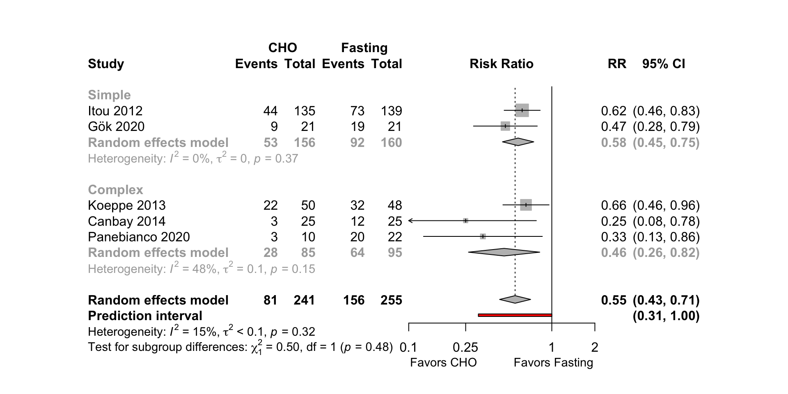
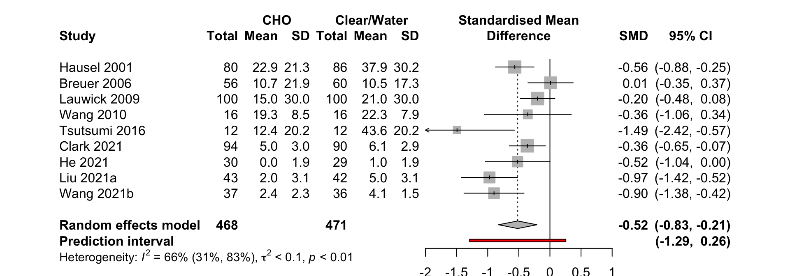
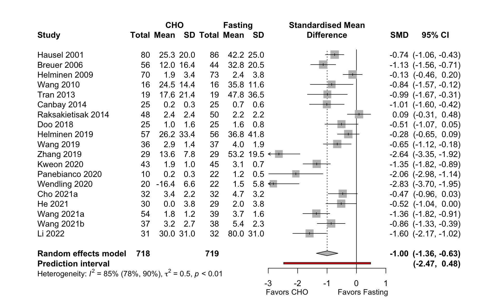
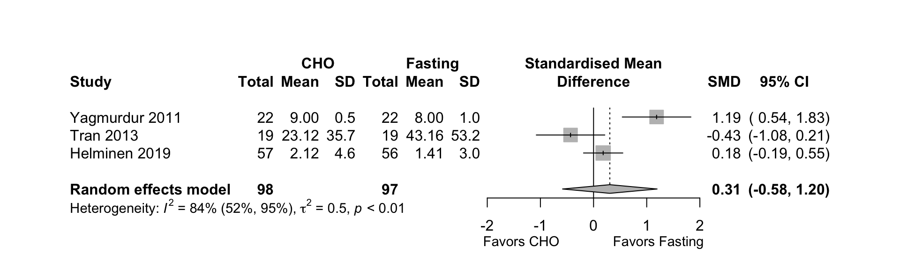
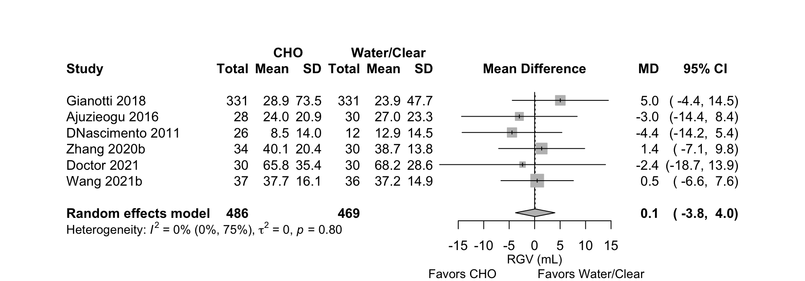
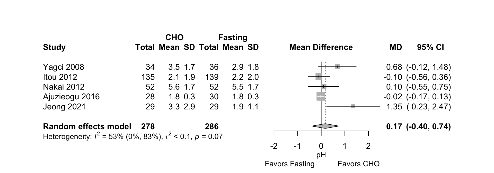
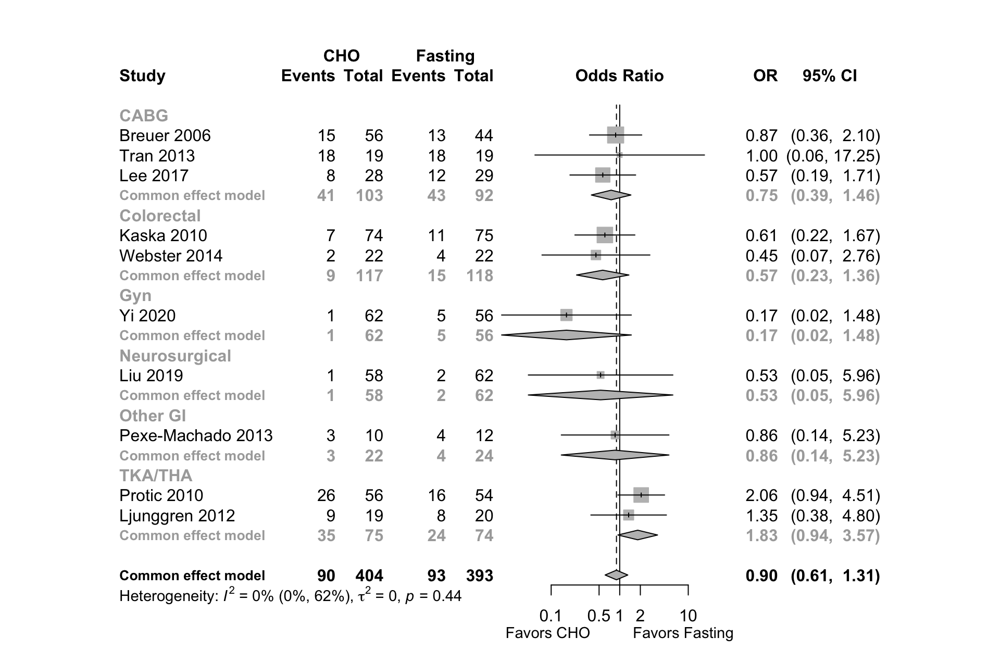
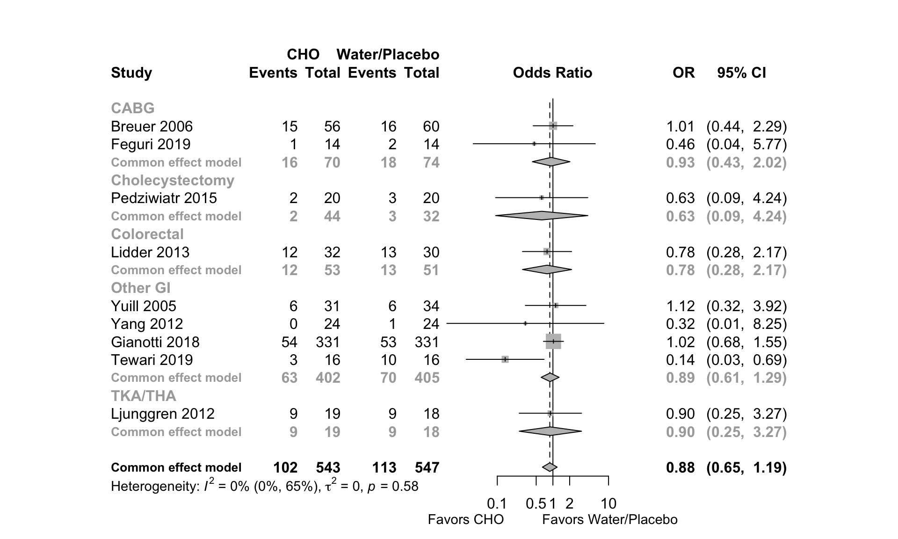
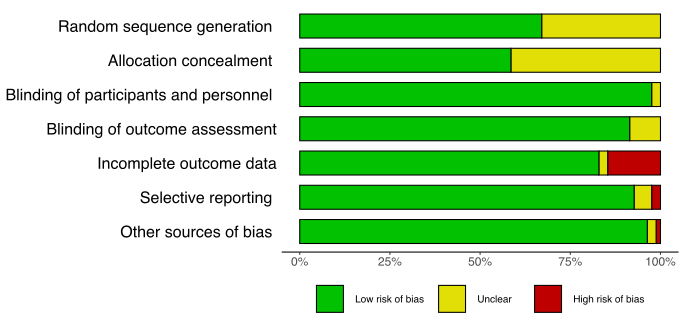

Carbohydrate Drinks
28 January, 2022 (17:17)
Last updated: 2022-01-28
Checks: 6 1
Knit directory: Fasting/
This reproducible R Markdown analysis was created with workflowr (version 1.7.0). The Checks tab describes the reproducibility checks that were applied when the results were created. The Past versions tab lists the development history.
The R Markdown file has unstaged changes. To know which version of the R Markdown file created these results, you’ll want to first commit it to the Git repo. If you’re still working on the analysis, you can ignore this warning. When you’re finished, you can run wflow_publish to commit the R Markdown file and build the HTML.
Great job! The global environment was empty. Objects defined in the global environment can affect the analysis in your R Markdown file in unknown ways. For reproduciblity it’s best to always run the code in an empty environment.
The command set.seed(20201201) was run prior to running the code in the R Markdown file. Setting a seed ensures that any results that rely on randomness, e.g. subsampling or permutations, are reproducible.
Great job! Recording the operating system, R version, and package versions is critical for reproducibility.
Nice! There were no cached chunks for this analysis, so you can be confident that you successfully produced the results during this run.
Great job! Using relative paths to the files within your workflowr project makes it easier to run your code on other machines.
Great! You are using Git for version control. Tracking code development and connecting the code version to the results is critical for reproducibility.
The results in this page were generated with repository version 0142b16. See the Past versions tab to see a history of the changes made to the R Markdown and HTML files.
Note that you need to be careful to ensure that all relevant files for the analysis have been committed to Git prior to generating the results (you can use wflow_publish or wflow_git_commit). workflowr only checks the R Markdown file, but you know if there are other scripts or data files that it depends on. Below is the status of the Git repository when the results were generated:
Ignored files:
Ignored: .DS_Store
Ignored: .Rhistory
Ignored: .Rproj.user/
Ignored: _@@/.DS_Store
Ignored: _@@/Carbohydrate Drinks.html
Ignored: _@@/Fasting-master-old/.DS_Store
Ignored: _@@/Fasting-master_old.zip
Ignored: _@@/all_arms.csv
Ignored: _@@/american-medical-association.csl
Ignored: _@@/anesthesiology.csl
Ignored: _@@/assets/
Ignored: _@@/cho_amts.csv
Ignored: _@@/fasting_slides.Rmd
Ignored: _@@/fasting_slides.html
Ignored: _@@/foot_unique.csv
Ignored: _@@/kq3_from_nmb.Rmd
Ignored: _@@/libs/
Ignored: _@@/nma_final_working.Rmd
Ignored: _@@/notes.txt
Ignored: _@@/outcome_list.txt
Ignored: _@@/rgv_cinema.csv
Ignored: _@@/rgv_cinema_11.28_10_17_2021.cnm
Ignored: _@@/rgv_cinema_12.13_7_5_2021.cnm
Ignored: _@@/rgv_cinema_RoB_chart_old.png
Ignored: _@@/rgv_cinema_netplot_old.png
Ignored: _@@/rgv_cinema_random_MD_Report.csv
Ignored: _@@/rgv_meta_dat.csv
Ignored: _@@/study_char_table_cho.csv
Ignored: _@@/thirst_nma_working.R
Ignored: code/.DS_Store
Ignored: code/_oldCode/
Ignored: code/a_temp_to_run.R
Ignored: code/anchors_cho.txt
Ignored: code/anchors_prot.txt
Ignored: code/calc_mn_sd_med_iqr_range.R
Ignored: code/nma_debug_copy.R
Ignored: code/snips.R
Ignored: code/used_files_dates.txt
Ignored: data/CHOComplicationList_012521.xlsx
Ignored: data/CHOProteinDetail_031021.xlsx
Ignored: data/GumOutcomes_102820.xlsx
Ignored: data/SOE_070621_final.xlsx
Ignored: data/SOE_CHO_060721_up.xlsx
Ignored: data/SOE_Gum_020421.xlsx
Ignored: data/SOE_Protein_021021.xlsx
Ignored: data/_old/
Ignored: data/contOutcomes_2022-01-27-14-20-20.csv
Ignored: data/dichotOutcomes_2022-01-27-14-20-44.csv
Ignored: data/fasting_table_add_102720.csv
Ignored: data/gum_soe_112120.xlsx
Ignored: data/hdi_072021.csv
Ignored: data/incl_mg_distsr_fasting_2022-01-27-14-21-36.csv
Ignored: data/likertOutcomes_2022-01-27-14-21-04.csv
Ignored: data/protein_detail_102320.xlsx
Ignored: data/rob_2022-01-27-14-21-19.csv
Ignored: data/robinsClinical_2022-01-27-14-25-46.csv
Ignored: data/robinsPro_2022-01-27-14-26-35.csv
Ignored: data/studyArm_2022-01-27-14-20-08.csv
Ignored: data/studyChar_2022-01-27-14-19-44.csv
Ignored: data/studyChar_2022-01-27-14-22-57.csv
Ignored: rgv_cinema.csv
Ignored: used_files_dates.txt
Untracked files:
Untracked: _@@/.gitignore
Untracked: _site.yml_back
Untracked: analysis/.gitignore
Untracked: analysis/bib/peds1hr.bib
Untracked: analysis/jama.csl
Untracked: analysis/nma_hunger_thirst.Rmd
Untracked: analysis/peds1hr (original).Rmd
Untracked: analysis/peds1hr.Rmd
Untracked: code/.gitignore
Untracked: code/bayes_sensitivity.R
Untracked: code/bugsnet_test_script.R
Untracked: code/calculations.R
Untracked: code/cho_010420.Rmd
Untracked: code/cho_nausea.R
Untracked: code/clear_outcomes.R
Untracked: code/createCinemaFile.R
Untracked: code/discard.R
Untracked: code/fasting_descriptive.R
Untracked: code/functions.R
Untracked: code/gum_summary_070121.R
Untracked: code/helpers.R
Untracked: code/helpers_old.R
Untracked: code/hrs.R
Untracked: code/hungerRateClear.R
Untracked: code/meanLogFunctions.R
Untracked: code/metaHungerClear.R
Untracked: code/nma_sensitivity.R
Untracked: code/raw_log.R
Untracked: code/robGum.R
Untracked: code/rob_021121.R
Untracked: code/rob_protein.R
Untracked: code/rob_summary.R
Untracked: code/rob_summary_mg.R
Untracked: code/rob_traffic_light.R
Untracked: code/rob_traffic_light_mg copy.R
Untracked: code/rob_traffic_light_mg.R
Untracked: code/select_refids_summary.R
Untracked: code/simp_comp_code.R
Untracked: code/skeleton.bib
Untracked: code/summary_071921.html
Untracked: code/summary_arxiv_072221.Rmd
Untracked: code/summary_arxiv_072221.pdf
Untracked: code/summary_arxiv_072221.tex
Untracked: code/summary_gum_arxiv_072221.Rmd
Untracked: code/summary_gum_arxiv_072221.pdf
Untracked: code/summary_gum_arxiv_072221.tex
Untracked: code/summary_prot_arxiv_072221.Rmd
Untracked: code/summary_prot_arxiv_072221.pdf
Untracked: code/summary_prot_arxiv_072221.tex
Untracked: code/timePlot.R
Untracked: data/.gitignore
Untracked: data/GRADE-quality.ttf
Untracked: data/PedsOneHour_012522_mg.xlsx
Untracked: data/PedsOneHour_012522_up.xlsx
Untracked: data/~$PedsOneHour_012522_mg.xlsx
Untracked: figures/
Unstaged changes:
Modified: analysis/cho_final.Rmd
Modified: code/readFiles_120220_wfr.R
Note that any generated files, e.g. HTML, png, CSS, etc., are not included in this status report because it is ok for generated content to have uncommitted changes.
These are the previous versions of the repository in which changes were made to the R Markdown (analysis/cho_final.Rmd) and HTML (docs/cho_final.html) files. If you’ve configured a remote Git repository (see ?wflow_git_remote), click on the hyperlinks in the table below to view the files as they were in that past version.
| File | Version | Author | Date | Message |
|---|---|---|---|---|
| Rmd | 2ccda0f | Mark Grant | 2021-10-22 | soe and cho updates (fix meta package changes) |
| html | 2ccda0f | Mark Grant | 2021-10-22 | soe and cho updates (fix meta package changes) |
| html | 99ed690 | Mark Grant | 2021-10-20 | hunger thirst nma added other updated |
| html | bdc4938 | Mark Grant | 2021-10-17 | updated all after nma |
| Rmd | 9e0d755 | Mark Grant | 2021-10-09 | updated all links, corrections to soe |
| html | 9e0d755 | Mark Grant | 2021-10-09 | updated all links, corrections to soe |
| Rmd | 539a728 | Mark Grant | 2021-10-09 | updates cho links and tabs |
| html | 539a728 | Mark Grant | 2021-10-09 | updates cho links and tabs |
| Rmd | 666f997 | Mark Grant | 2021-10-07 | update |
| Rmd | 24e2327 | Mark Grant | 2021-10-07 | udpate site |
| html | 24e2327 | Mark Grant | 2021-10-07 | udpate site |
| html | 12bbee2 | Mark Grant | 2021-07-19 | Build site. |
| Rmd | dbbfb5f | Mark Grant | 2021-07-19 | wflow_publish(“analysis/cho_final.Rmd”) |
| html | 94f6305 | Mark Grant | 2021-07-05 | Build site. |
| Rmd | 0798462 | Mark Grant | 2021-07-05 | wflow_publish(“analysis/cho_final.Rmd”) |
| html | 7c5c123 | Mark Grant | 2021-06-30 | Build site. |
| Rmd | f02d999 | Mark Grant | 2021-06-30 | wflow_publish(“analysis/cho_final.Rmd”) |
| Rmd | 8a1f1ca | Mark Grant | 2021-06-24 | updated CHO_final.Rmd complete |
| html | 8a1f1ca | Mark Grant | 2021-06-24 | updated CHO_final.Rmd complete |
| html | 1e63dd1 | Mark Grant | 2021-06-14 | Build site. |
| Rmd | dad181f | Mark Grant | 2021-06-14 | wflow_publish(c("analysis/_site.yml“,”analysis/index.Rmd“,”analysis/cho_final.Rmd", |
| html | 60b208f | Mark Grant | 2021-06-13 | Build site. |
| Rmd | b733410 | Mark Grant | 2021-06-13 | wflow_publish(c("analysis/_site.yml“,”analysis/index.Rmd“,”analysis/nma_final.Rmd", |
| Rmd | a786c0b | Mark Grant | 2021-06-10 | completed update removing naguib; checked table, figure numbering |
| Rmd | 63c5ec5 | Mark Grant | 2021-06-10 | updated complications |
| Rmd | 38512c0 | Mark Grant | 2021-06-10 | updated ph all |
| Rmd | 0040330 | Mark Grant | 2021-06-10 | updated rgv |
| Rmd | d077b9b | Mark Grant | 2021-06-10 | update rgv tables |
| Rmd | 6315db0 | Mark Grant | 2021-06-10 | update peds vomit preop |
| Rmd | dfe18f0 | Mark Grant | 2021-06-10 | updated hunger without naguib and correct estimators |
| Rmd | bf67ffc | Mark Grant | 2021-06-08 | prior to making all edits after deleting naguib 2001 |
| html | 834c649 | Mark Grant | 2021-06-03 | Build site. |
| Rmd | b20e48e | Mark Grant | 2021-06-03 | wflow_publish(“analysis/cho_final.Rmd”) |
| html | 4bced09 | Mark Grant | 2021-05-17 | Build site. |
| html | 8bf98d3 | Mark Grant | 2021-05-17 | Build site. |
| Rmd | 4c55735 | Mark Grant | 2021-05-17 | wflow_publish(“analysis/cho_final.Rmd”) |
| html | f39e6a1 | Mark Grant | 2021-05-17 | Build site. |
| Rmd | b3b1f79 | Mark Grant | 2021-05-17 | wflow_publish(c("analysis/_site.yml“,”analysis/index.Rmd“,”analysis/gum_final.Rmd", |
| html | 9390d21 | Mark Grant | 2021-05-16 | Build site. |
| Rmd | 3dfe5c8 | Mark Grant | 2021-05-16 | wflow_publish(c("analysis/_site.yml“,”analysis/index.Rmd“,”analysis/gum_final.Rmd", |
| html | 7b6f342 | Mark Grant | 2021-05-16 | Build site. |
| html | 3566a66 | Mark Grant | 2021-05-16 | Build site. |
| html | 1df8393 | Mark Grant | 2021-05-15 | Build site. |
| html | b0e4ce7 | Mark Grant | 2021-05-15 | Build site. |
| html | b7de734 | Mark Grant | 2021-05-14 | Build site. |
| Rmd | 0de0880 | Mark Grant | 2021-05-14 | wflow_publish(c("analysis/_site.yml“,”analysis/index.Rmd“,”analysis/chewing_gum_121620.Rmd", |
| html | 808d3f0 | Mark Grant | 2021-05-14 | Build site. |
| Rmd | 61906a2 | Mark Grant | 2021-05-14 | wflow_publish(c("analysis/_site.yml“,”analysis/index.Rmd“,”analysis/chewing_gum_121620.Rmd", |
| html | 6ce2ff6 | Mark Grant | 2021-05-14 | Build site. |
| Rmd | bd30d00 | Mark Grant | 2021-05-14 | wflow_publish(c("analysis/_site.yml“,”analysis/index.Rmd“,”analysis/chewing_gum_121620.Rmd", |
| html | f3750cd | Mark Grant | 2021-05-13 | Build site. |
| html | b5eef03 | Mark Grant | 2021-05-13 | Build site. |
| Rmd | 04b9f47 | Mark Grant | 2021-05-13 | analysis/protein_final.Rmd |
| html | 76b8f53 | Mark Grant | 2021-05-12 | Build site. |
| Rmd | 195ae33 | Mark Grant | 2021-05-12 | wflow_publish(“analysis/cho_final.Rmd”) |
| html | 0cf6149 | Mark Grant | 2021-05-10 | Build site. |
| html | 3a1c421 | Mark Grant | 2021-05-10 | Build site. |
| Rmd | 2f88cdd | Mark Grant | 2021-05-10 | wflow_publish(c("analysis/_site.yml“,”analysis/index.Rmd“,”analysis/chewing_gum_121620.Rmd", |
Included Studies
Table 1. Number of included studies according to age, surgery, and design.
| Age | Patients | Design | N |
|---|---|---|---|
| Adult | Surgical | RCT | 82 |
| Nonrandomized | 8 | ||
| Prospective Cohort | 3 | ||
| Retrospective Cohort | 2 | ||
| Case-Control | 1 | ||
| Before-After | 1 | ||
| Adult | Non-surgical | RCT | 1 |
| Crossover | 9 | ||
| Nonrandomized | 2 | ||
| Pediatric | Surgical | RCT | 8 |
| Prospective Cohort | 1 | ||
| Pediatric | Non-surgical | RCT | 1 |
| Crossover | 1 | ||
| Prospective Cohort | 1 | ||
| Total | 121 | ||
| RCT: randomized controlled trial. |
Adult Surgical
Table 2. Studies of adults undergoing surgery (see References for citations).
| ID | Study | Analyzed (N) | Centers | Countrya | Surgery |
|---|---|---|---|---|---|
| RCT | |||||
| 3518 | Feguri 2012 | 40 | 1 | Brazila | CABG |
| 673 | Feguri 2019 | 28 | 1 | Brazila | CABG |
| 3036 | Tran 2013 | 38 | 1 | Canada | CABG |
| 4443 | Jarvela 2008 | 101 | 1 | Finland | CABG |
| 4766 | Breuer 2006 | 160 | 1 | Germany | CABG |
| 1320 | Lee 2017 | 57 | 1 | South Korea | CABG |
| 4702 | Rapp-Kesek 2007 | 18 | 1 | Sweden | CABG |
| 1274 | Savluk 2017 | 152 | 1 | Turkey | CABG |
| 262 | Wendling 2020 | 47 | 1 | USA | Cesarean delivery |
| 4245 | Faria 2009 | 21 | 1 | Brazila | Cholecystectomy |
| 3823 | DNascimento 2011 | 50 | 1 | Brazila | Cholecystectomy |
| 3282 | DNascimento 2012a | 28 | 1 | Brazila | Cholecystectomy |
| 3513 | DNascimento 2012b | 48 | 1 | Brazila | Cholecystectomy |
| 2256 | Ravanini 2015 | 38 | 1 | Brazila | Cholecystectomy |
| 2982 | Zelic 2013 | 70 | 1 | Croatia | Cholecystectomy |
| 5309 | Bisgaard 2004 | 86 | 1 | Denmark | Cholecystectomy |
| 466 | Helminen 2019 | 108 | 1 | Finland | Cholecystectomy |
| 2172 | Singh 2015b | 120 | 1 | Indiaa | Cholecystectomy |
| 2261 | Pedziwiatr 2015 | 40 | 1 | Poland | Cholecystectomy |
| 926 | Lee 2018 | 139 | 1 | South Korea | Cholecystectomy |
| 5091 | Hausel 2005 | 172 | 3 | Sweden | Cholecystectomy |
| 3154 | Yildiz 2013 | 60 | 1 | Turkey | Cholecystectomy |
| 2985 | Yilmaz 2013 | 40 | 1 | Turkey | Cholecystectomy |
| 553 | Onalan 2019 | 50 | 1 | Turkey | Cholecystectomy |
| 2820 | Webster 2014 | 44 | 1 | Australia | Colorectal |
| 431 | Rizvanovic 2019 | 50 | 1 | Bosnia and Herzegovinaa | Colorectal |
| 69 | Karimian 2020 | 29 | 1 | Canada | Colorectal |
| 4014 | Wang 2010 | 52 | 1 | Chinaa | Colorectal |
| 160 | Shi 2020 | 63 | 1 | Chinaa | Colorectal |
| 4084 | Kaska 2010 | 221 | 1 | Czech Republic | Colorectal |
| 5479 | Henriksen 2003 | 48 | 1 | Denmark | Colorectal |
| 2564 | Sada 2014 | 142 | 1 | Kosovoa | Colorectal |
| 3987 | Mathur 2010 | 142 | 2 | New Zealand | Colorectal |
| 5725 | Hausel 2001 | 252 | 3 | Sweden | Colorectal |
| 4602 | Svanfeldt 2007 | 12 | 1 | Sweden | Colorectal |
| 763 | Wongyingsinn 2019 | 68 | 1 | Thailanda | Colorectal |
| 4810 | Noblett 2006 | 35 | 1 | UK | Colorectal |
| 3107 | Lidder 2013 | 120 | 1 | UK | Colorectal |
| 3477 | Itou 2012 | 274 | 6 | Japan | Elective |
| 2940 | Koeppe 2013 | 98 | 1 | Brazila | Endoscopic |
| 602 | Wang 2019 | 73 | 1 | Chinaa | Endoscopic |
| 165 | Marquini 2020ab | 74 | 1 | Brazila | Gyn |
| 6446 | Marquini 2020bb | 74 | 1 | Brazila | Gyn |
| 247 | Marquini 2020cb | 74 | 1 | Brazila | Gyn |
| 743 | Zhang 2019 | 58 | 1 | Chinaa | Gyn |
| 245 | Yi 2020 | 118 | 1 | Malaysia | Gyn |
| 3670 | Perrone 2011 | 17 | 1 | Brazila | Herniorrhaphy |
| 3553 | Yagmurdur 2011 | 44 | 1 | Turkey | Herniorrhaphy |
| 499 | Nascimento 2019 | 54 | 1 | Brazila | Labor |
| 2482 | Singh 2015a | 20 | 1 | Indiaa | Maxillofacial |
| 1230 | Esaki 2018 | 23 | 1 | Japan | Maxillofacial |
| 391 | Liu 2019 | 120 | 1 | Chinaa | Neurosurgical |
| 4952 | Melis 2006 | 29 | 1 | Netherlands | Orthopedic |
| 3403 | Harsten 2012 | 60 | 1 | Sweden | Orthopedic |
| 1631 | Dilmen 2017 | 40 | 1 | Turkey | Orthopedic |
| 3090 | Pexe-Machado 2013 | 22 | 1 | Brazila | Other GI |
| 2806 | deANascimento 2014 | 24 | 1 | Brazila | Other GI |
| 6490 | Yang 2012 | 48 | 1 | Chinaa | Other GI |
| 1117 | Gianotti 2018 | 662 | 5 | Italy | Other GI |
| 274 | Panebianco 2020 | 32 | 1 | Italy | Other GI |
| 1102 | van Stijn 2018 | 18 | 1 | Netherlands | Other GI |
| 1768 | Ajuzieogu 2016 | 88 | 1 | Nigeriaa | Other GI |
| 1993 | Karlsson 2016 | 73 | 1 | Sweden | Other GI |
| 5118 | Yuill 2005 | 65 | 1 | UK | Other GI |
| 716 | Tewari 2019 | 32 | 1 | UK | Other GI |
| 2674 | Canbay 2014 | 50 | 1 | Turkey | Prostatectomy |
| 4318 | Lauwick 2009 | 200 | 1 | Belgium | Thyroid |
| 4305 | Helminen 2009 | 230 | 1 | Finland | Thyroid |
| 915 | Doo 2018 | 50 | 1 | South Korea | Thyroid |
| 4524 | Yagci 2008 | 70 | 1 | Turkey | Thyroid |
| 1290 | Cakar 2017 | 60 | 1 | Turkey | Thyroid |
| 4083 | Protic 2010 | 110 | 1 | Croatia | TKA/THA |
| 5802 | Soop 2001 | 15 | 1 | Sweden | TKA/THA |
| 5229 | Soop 2004 | 14 | 1 | Sweden | TKA/THA |
| 4261 | Aronsson 2009 | 28 | 1 | Sweden | TKA/THA |
| 3371 | Ljunggren 2012 | 57 | 1 | Sweden | TKA/THA |
| 2710 | Ljunggren 2014 | 20 | 2 | Sweden | TKA/THA |
| 2734 | Raksakietisak 2014 | 98 | 1 | Thailanda | TKA/THA |
| 1926 | Celiksular 2016 | 80 | 1 | Turkey | TKA/THA |
| 7990 | Joshi 2020 | 60 | 1 | Indiaa | Various |
| 3277 | Nakai 2012 | 104 | 1 | Japan | Various |
| 2234 | Asakura 2015 | 134 | 1 | Japan | Various |
| 1795 | Tsutsumi 2016 | 24 | 1 | Japan | Various |
| 3481 | Braga 2012 | 36 | 1 | Italy | Whipple |
| Nonrandomized Studies of Interventions | |||||
| 6529 | Adamova 2017 | 172 | 1 | Czech Republic | Colorectal |
| 1975 | Bang 2016 | 18 | 1 | Sweden | Colorectal |
| 1463 | Labuschagne 2017 | 391 | 1 | Australia | Endoscopic |
| 1782 | De Jonghe 2016 | 393 | 1 | France | Gyn |
| 4284 | Spahn 2009 | 53 | 1 | Germany | Other GI |
| 3367 | Vigano 2012 | 76 | 1 | Italy | Other GI |
| 1618 | Hellstrom 2017 | 29 | 1 | Sweden | TKA/THA |
| 3588 | Oyama 2011 | 121 | 1 | Japan | Various |
| Prospective Cohort | |||||
| 3812 | Taniguchi 2011 | 20 | 1 | Japan | Breast |
| 226 | Popivanov 2020 | 40 | 1 | Ireland | Cesarean delivery |
| 131 | Alimena 2020 | 415 | 1 | USA | Gyn |
| Retrospective Cohort | |||||
| 147 | Talutis 2020 | 444 | 1 | USA | Other GI |
| 6142 | Blum 2019 | 100 | 1 | USA | TKA/THA |
| Case-Control | |||||
| 6530 | Weledji 2017 | 70 | 1 | Cameroona | Various |
| Before-After | |||||
| 318 | Pachella 2019 | 97 | 1 | USA | Thoracic |
| RCT: randomized controlled trial. | |||||
| a Non very high Human Development Index country. | |||||
| b Multiple publications of the same study. | |||||
Adult Nonsurgical
Table 3. Studies of healthy adults not undergoing surgery (see References for citations).
| ID | Study | Analyzed (N) | Centers | Countrya | Surgery |
|---|---|---|---|---|---|
| RCT | |||||
| 233 | Pai 2020 | 19 | 1 | USA | None (healthy) |
| Crossover | |||||
| 2759 | Brianez 2014 | 11 | 1 | Brazila | None (healthy) |
| 7600 | Bisinotto 2017 | 80 | 1 | Brazila | None (healthy) |
| 1677 | Gomes 2017 | 20 | 1 | Brazila | None (healthy) |
| 6280 | Bisinotto 2019 | 34 | 1 | Brazila | None (healthy) |
| 6494 | Jian 2017 | 30 | 1 | Chinaa | None (healthy) |
| 2703 | Nakamura 2014 | 10 | 1 | Japan | None (healthy) |
| 1352 | Okabe 2017 | 8 | 1 | Japan | None (healthy) |
| 4092 | Lobo 2009 | 20 | 1 | UK | None (healthy) |
| 3728 | Awad 2011 | 10 | 1 | UK | None (healthy) |
| Nonrandomized Studies of Interventions | |||||
| 1551 | Shiraishi 2017 | 20 | 1 | Japan | None (healthy) |
| 4422 | Gustafsson 2008 | 35 | 1 | Sweden | None (healthy) |
| a RCT: randomized controlled trial. | |||||
| b Non very high Human Development Index country. | |||||
Pediatric Surgical
Table 4. Studies of pediatric surgical patients (see References for citations).
| ID | Study | Analyzed (N) | Centers | Countrya | Surgery |
|---|---|---|---|---|---|
| RCT | |||||
| 2814 | Moghaddam 2014 | 120 | 1 | Irana | Adenotonsillectomy |
| 7747 | Huang 2020 | 344 | 1 | Chinaa | Cardiac |
| 5815 | Moyao-Garcia 2001 | 40 | 1 | Mexicoa | Elective |
| 7880 | Carvalho 2020 | 40 | 1 | Brazila | Herniorrhaphy |
| 5034 | Castillo-Zamora 2005 | 100 | 1 | Mexicoa | Orthopedic |
| 1972 | Song 2016 | 79 | 1 | South Korea | Orthopedic |
| 940 | TDrobjewski 2018 | 120 | 1 | Austria | Other GI |
| Nonrandomized Studies of Interventions | |||||
| 2756 | Gawecka 2014 | 20 | 1 | Poland | Other GI |
| Prospective Cohort | |||||
| 1228 | Jiang 2018 | 1200 | 6 | Chinaa | Various |
| RCT: randomized controlled trial. | |||||
| a Non very high Human Development Index country. | |||||
Pediatric Nonsurgical
Table 5. Studies of healthy pediatric individuals not undergoing surgery (see References for citations).
| ID | Study | Analyzed (N) | Centers | Countrya | Surgery |
|---|---|---|---|---|---|
| RCT | |||||
| 3598 | Schmitz 2011b | 16 | 1 | Switzerland | None (healthy) |
| Crossover | |||||
| 81 | Zhang 2020 | 16 | 1 | Chinaa | None (healthy) |
| Prospective Cohort | |||||
| 1315 | Du 2017 | 48 | 1 | USA | None (healthy) |
| RCT: randomized controlled trial | |||||
| a Non very high Human Development Index country. | |||||
Patient Reported Outcomes
Preoperative Hunger
Rates (surgical)
Table 6. Rates of preoperative hunger according to fasting, liquid and volume.
| Study | Liquid | N | > 6 | 6→2 | 2 | N (%) | CHO vs. Comparator | |
|---|---|---|---|---|---|---|---|---|
| Adult, Surgical | ||||||||
| RCT | ||||||||
| Itou 2012 | Fasting | 139 | 73 (53) | 0.44 (0.27-0.71) | ||||
| CHO/Simp | 135 | 500 | 500 | 44 (33) | ||||
| Koeppe 2013a | Fasting | 48 | 32 (67) | 0.39 (0.17-0.89) | ||||
| CHO/Comp/Prot | 50 | 200 | 22 (44) | |||||
| Canbay 2014 | Fasting | 25 | 12 (48) | 0.15 (0.04-0.62) | ||||
| CHO/Comp | 25 | 800 | 400 | 3 (12) | ||||
| Panebianco 2020b | Fasting | 22 | 20 (91) | 0.04 (0.01-0.31) | ||||
| CHO/Comp | 10 | 800 | 400 | 3 (30) | ||||
| Prospective Cohort | ||||||||
| Taniguchi 2011c | CHO/Simp | 20 | 1000 | 3 (15) | ||||
| Pediatric, Surgical | ||||||||
| RCT | ||||||||
| TDrobjewski 2018 | Fasting | 60 | 18 (30) | 1.17 (0.54-2.52) | ||||
| CHO/Comp | 60 | 215 | 215 | 20 (33) | ||||
| RCT: randomized controlled trial; OR: odds ratio; CHO: carbohydrate; Simp: simple; Comp: complex; Prot: protein. | ||||||||
| a ‘Did you feel hunger during the fasting period?’ | ||||||||
| b Reported no hunger. | ||||||||
| c Oral rehydration consumed between 5 and 2 hours prior to surgery. ‘Did you feel hungry before surgery?’ | ||||||||
Patient-rated (surgical)
Table 7. Patient-rated preoperative hunger according to fasting, liquid and volume.
| Study | Liquid | N | > 6 | 6→2 | 2 | Scalea | M (SD) | Med (IQR) | Range |
|---|---|---|---|---|---|---|---|---|---|
| Adult, Surgical | |||||||||
| RCT | |||||||||
| Hausel 2001 | Fasting | 86 | 0→100 | 35 (10-62) | (3-77) | ||||
| Placebo | 86 | 800 | 400 | 34 (10-68) | (3-84) | ||||
| CHO/Comp | 80 | 800 | 400 | 18 (5-42) | (1-73) | ||||
| Breuer 2006 | Fasting | 44 | 0→100 | 4 | (0-60) | ||||
| Placebo | 60 | 800 | 400 | 5 | (0-80) | ||||
| CHO/Comp | 56 | 800 | 400 | 3 | (0-100) | ||||
| Melis 2006 | Fasting | 9 | 0→100 | -6 (25)b | |||||
| CHO/Simp | 10 | 400 | 1 (68)b | ||||||
| CHO/Comp | 10 | 400 | -16 (31)b | ||||||
| Helminen 2009 | Fasting | 73 | 0→10 | 3 (0-5) | |||||
| CHO/Comp | 70 | 400 | 0 (0-2) | ||||||
| Lauwick 2009 | Water | 100 | 100 | 0→100 | 21.0 (30.0) | ||||
| CHO/Comp | 100 | 400 | 15.0 (30.0) | ||||||
| Wang 2010 | Fasting | 16 | 0→100 | 28 | (13-50) | ||||
| Placebo | 16 | 400 | 22 | (9-37) | |||||
| CHO/Comp | 16 | 400 | 18 | (7-37) | |||||
| Yagmurdur 2011 | Fasting | 22 | 0→100 | 69 | (65-73) | ||||
| CHO/Comp | 22 | 800 | 400 | 22 | (19-25) | ||||
| Tran 2013 | Fasting | 19 | 0→100 | 49 (29-64) | |||||
| CHO/Comp | 19 | 800 | 400 | 25 (7-43) | |||||
| Canbay 2014 | Fasting | 25 | 0→3NRS | 0 (0.0-1.0) | (0-2) | ||||
| CHO/Comp | 25 | 800 | 400 | 0 (0.0-0.0) | (0-1) | ||||
| Raksakietisak 2014 | Fasting | 50 | 0→10 | 2.3 (2.4) | |||||
| CHO/Simp | 48 | 400 | 400 | 2.6 (2.3) | |||||
| Tsutsumi 2016 | Water | 12 | 450 | 0→100 | 43 | (30-59) | |||
| CHO/Simp/Prot | 12 | 600 | 13 | (3-20) | |||||
| Doo 2018 | Fasting | 25 | 0→10NRS | 1 (0-2) | |||||
| CHO/Comp | 25 | 400 | 1 (0-2) | ||||||
| Helminen 2019 | Fasting | 56 | 0→100 | 18 (5-50) | |||||
| CHO/Comp/Prot | 57 | 200 | 10 (0-30) | ||||||
| Rizvanovic 2019 | Fasting | 25 | 0→100 | 23.8 (15.0) | |||||
| CHO/Comp | 25 | 400 | 200 | 1.6 (13.5) | |||||
| Wang 2019 | Fasting | 37 | 0→10 | 4.0 (2.1) | |||||
| CHO/Comp | 36 | 710 | 355 | 2.5 (1.5) | |||||
| Zhang 2019 | Fasting | 29 | 0→100 | 40 (40-50) | |||||
| CHO/Comp | 29 | 800 | 400 | 10 (10-10) | |||||
| Panebianco 2020 | Fasting | 22 | 0→2NRS | 1.00 | 1 | (0-2) | |||
| CHO/Comp | 10 | 800 | 400 | 0.30 | 0 | (0-1) | |||
| Wendling 2020 | Fasting | 22 | 0→100 | 9.5 (3.4)c | |||||
| CHO/Simp | 20 | 710 | 355 | -6.0 (4.0)c | |||||
| CHO/Comp | 25 | 710 | 355 | -11.2 (5.5)c | |||||
| Nonrandomized Studies of Interventions | |||||||||
| Oyama 2011 (AM) | Fasting | 26 | 1→5NRS | 2.5 (0.5-4.5)d | |||||
| CHO/Simp/Prot | 27 | 300 | 200 | 3 (1.0-5.0) | |||||
| Oyama 2011 (PM) | Fasting | 35 | 1→5NRS | 4 (2.0-6.0)d | |||||
| CHO/Simp/Prot | 33 | 500 | 300 | 3 (1.0-5.0) | |||||
| No detected difference | |||||||||
| De Jonghe 2016 | Fasting | 194 | 0→10NRS | 2 | |||||
| CHO/Comp | 199 | 400 | 400 | 0 | |||||
| Difference p < .0001 | |||||||||
| RCT: randomized controlled trial; M: mean; SD: standard deviation; Med: median; IQR: interquartile range; NRS: numeric rating scale. | |||||||||
| a Arrow (→) indicates best to worst hunger (visual analogue if not noted NRS). | |||||||||
| b Within group change from baseline; reported IQR as a single value. | |||||||||
| c Difference from before beverage consumption to 1 hr post-consumption. | |||||||||
| d IQR bound outside range of scale used. | |||||||||
Patient-rated (nonsurgical)
Table 8. Patient-rated hunger 2 hours following liquids in nonsurgical studies according to fasting, liquid and volume.
| Study | Liquid | N | 2 hr | Scalea | M (SD) | Med (IQR) | Range |
|---|---|---|---|---|---|---|---|
| Adult, Non-surgical | |||||||
| Crossover | |||||||
| Jian 2017 | CHO/Simp | 30 | 400 | 0→100 | 21.1 | ||
| CHO/Comp | 30 | 400 | 19.0 | ||||
| Did not compare groups | |||||||
| Pediatric, Non-surgical | |||||||
| Du 2017 | Milk | 16 | 296 | 5→1HSS | 2.0 (0.3) | ||
| CHO/Simp/Prot | 16 | 296 | 2.2 (0.2) | ||||
| CHO/Simp | 16 | 296 | 2.0 (0.2) | ||||
| No detected differences | |||||||
| Zhang 2020 | Placebo | 16 | 97 | 0→10 | 6.97 (6-10) | (3-10) | |
| CHO/Comp | 16 | 97 | 7.11 (5-9) | (3-10) | |||
| No detected difference | |||||||
| hr: hours; M: mean; SD: standard deviation; Med: median; IQR: interquartile range; HSS: Hunger Satiety Scale. | |||||||
| a Arrow (→) indicates best to worst hunger (visual analogue or HSS). | |||||||
Pooled (adult RCTs, rates)
Figure 1. Pooled preoperative hunger from randomized trials comparing carbohydrate drinks with fasting in adult surgical patients.

Too few studies to examine small-study effects.
Pooled (adult RCTs, patient-rated)
Figure 2. Pooled preoperative hunger ratings (standardized mean differences in VAS or NRS) from randomized trials comparing carbohydrate drinks with fasting in adult surgical patients.
Yagmurdur 2011 and Zhang 2019 standard deviations were estimated using P-values. Melis 2006 reported only non-signficant results and could not be included. A sensitivity analysis using multiple imputation to include the the result yielded SMD = -0.59 (95% CI, -0.83, -0.34; I2 = 74%). Excluding Wendling 2020, SMD = -0.61 (95% CI, -0.87 to -0.34), I2 = 74% (53%, 84%). There were some indications of small-study effects in funnel plot, but not supported by Pustejovsky’s test of asymmetry, P = .16.
Figure 3. Pooled hunger ratings (standardized mean differences in VAS or NRS) from randomized trials comparing carbohydrate drinks with clear liquids or water in adult surgical patients.

Tsutsumi 2016 mean estimated from median and range, standard deviation, and P-value (.001). Too few studies to examine small-study effects.
Preoperative Thirst
Rates (surgical)
Table 9. Rates of preoperative thirst according to fasting, liquid and volume.
| Study | Liquid | N | > 6 | 6→2 | 2 | N (%) | CHO vs. Comparator | |
|---|---|---|---|---|---|---|---|---|
| Adult, Surgical | ||||||||
| RCT | ||||||||
| Feguri 2012a | Water | 20 | 400 | 200 | 3 (15) | 0.12 (0.01-2.53) | ||
| CHO/Comp | 20 | 400 | 200 | 0 (0) | ||||
| Koeppe 2013b | Fasting | 48 | 26 (54) | 0.72 (0.33-1.60) | ||||
| CHO/Comp/Prot | 50 | 200 | 23 (46) | |||||
| Yildiz 2013c | Fasting | 30 | 26 (87) | 0.02 (0.00-0.08) | ||||
| CHO/Comp | 30 | 800 | 400 | 3 (10) | ||||
| Canbay 2014 | Fasting | 25 | 18 (72) | 0.12 (0.03-0.44) | ||||
| CHO/Comp | 25 | 800 | 400 | 6 (24) | ||||
| Panebianco 2020d | Fasting | 22 | 20 (91) | 0.03 (0.00-0.21) | ||||
| CHO/Comp | 10 | 800 | 400 | 2 (20) | ||||
| Nonrandomized Studies of Interventions | ||||||||
| Labuschagne 2017e | Fasting | 194 | 125 (65) | 0.28 (0.19-0.43) | ||||
| CHO/Simp | 197 | 1200 | 67 (34) | |||||
| Prospective Cohort | ||||||||
| Taniguchi 2011f | CHO/Simp | 20 | 1000 | 3 (15) | ||||
| > 6 6→2 ≤ 2 | ||||||||
| Pedatric, Surgical | ||||||||
| RCT | ||||||||
| Castillo-Zamora 2005 | Fasting | 50 | 29 (58) | 0.05 (0.01-0.17) | ||||
| CHO/Simp | 50 | 250 | 3 (6) | |||||
| TDrobjewski 2018g | Fasting | 60 | 19 (32) | 0.92 (0.43-2.01) | ||||
| CHO/Comp | 60 | 215 | 215 | 18 (30) | ||||
| Huang 2020h | CHO/Simpi | 174 | 100 | 58 (33) | 0.52 (0.32-0.84) | |||
| CHO/Simpj | 170 | 100 | 35 (21) | |||||
| RCT: randomized controlled trial; OR: odds ratio; CHO: carbohydrate; Prot: protein. | ||||||||
| a Reported thirst. | ||||||||
| b ‘Did you feel thirst during the fasting period?’ (prior to endoscopy). | ||||||||
| c Based on VAS scores. | ||||||||
| d ‘None vs. a little or alot.’ | ||||||||
| e Yes vs. no. | ||||||||
| f ‘Did you have a dry mouth before surgery?’ | ||||||||
| g Thirst present or absent. | ||||||||
| h Compared similar carbohydrate liquids given 1 vs. 2 hours prior to surgery. Odds ratio is for 1 vs. 2 hour comparison. | ||||||||
| i Liquid at 2 hours. | ||||||||
| j Liquid at 1 hour. | ||||||||
Patient-rated (surgical)
Table 10. Patient-rated preoperative thirst in adult surgical studies according to fasting, liquid and volume.
| Study | Liquid | N | > 6 | 6→2 | 2 | Scalea | M (SD) | Med (IQR) | Range |
|---|---|---|---|---|---|---|---|---|---|
| Adult, Surgical | |||||||||
| RCT | |||||||||
| Hausel 2001 | Fasting | 86 | 0→100 | 40 (20-66) | (7-81) | ||||
| Placebo | 86 | 800 | 400 | 31 (14-65) | (4-79) | ||||
| CHO/Comp | 80 | 800 | 400 | 24 (7-42) | (3-70) | ||||
| Henriksen 2003 | Water | 16 | 0→10 | 3.38 (2-7) | |||||
| CHO/Comp/Prot | 15 | 400 | 400 | 3.14 (0-3) | |||||
| CHO/Comp | 17 | 400 | 400 | 3.17 (1-3) | |||||
| Breuer 2006 | Fasting | 44 | 0→100 | 30 | (0-90) | ||||
| Placebo | 60 | 800 | 400 | 8 | (0-17) | ||||
| CHO/Comp | 56 | 800 | 400 | 7 | (0-75) | ||||
| Melis 2006 | Fasting | 9 | 0→100 | 34 (34)b | |||||
| CHO/Simp | 10 | 400 | -7 (39)b | ||||||
| CHO/Comp | 10 | 400 | 0 (18)b | ||||||
| Helminen 2009 | Fasting | 73 | 0→10 | 2 (0-5) | |||||
| CHO/Comp | 70 | 400 | 1 (0-4) | ||||||
| Lauwick 2009 | Water | 100 | 100 | 0→100 | 28.0 (30.0) | ||||
| CHO/Comp | 100 | 400 | 18.0 (20.0) | ||||||
| Wang 2010 | Fasting | 16 | 0→100 | 34 | (19-60) | ||||
| Placebo | 16 | 400 | 17 | (6-53) | |||||
| CHO/Comp | 16 | 400 | 20 | (8-59) | |||||
| Yagmurdur 2011 | Fasting | 22 | 0→100 | 60 | (56-64) | ||||
| CHO/Comp | 22 | 800 | 400 | 20 | (16-24) | ||||
| Tran 2013 | Fasting | 19 | 0→100 | 50 (24-70) | |||||
| CHO/Comp | 19 | 800 | 400 | 10 (7-34) | |||||
| Canbay 2014 | Fasting | 25 | 0→3NRS | 1 (0.0-1.0) | (0-2) | ||||
| CHO/Comp | 25 | 800 | 400 | 0 (0.0-0.5) | (0-1) | ||||
| Raksakietisak 2014 | Fasting | 50 | 0→10 | 2.2 (2.2) | |||||
| CHO/Simp | 48 | 400 | 400 | 2.4 (2.4) | |||||
| Tsutsumi 2016 | Water | 12 | 450 | 0→100 | 28 | (13-30) | |||
| CHO/Simp/Prot | 12 | 600 | 12 | (10-15) | |||||
| Doo 2018 | Fasting | 25 | 0→10NRS | 2 (1-2) | |||||
| CHO/Comp | 25 | 400 | 1 (0-2) | ||||||
| Helminen 2019 | Fasting | 56 | 0→100 | 40 (8-63) | |||||
| CHO/Comp/Prot | 57 | 200 | 22 (6-50) | ||||||
| Rizvanovic 2019 | Fasting | 25 | 0→100 | 20.8 (2.2) | |||||
| CHO/Comp | 25 | 400 | 200 | 4.2 (3.6) | |||||
| Wang 2019 | Fasting | 37 | 0→10 | 4.0 (0.3) | |||||
| CHO/Comp | 36 | 710 | 355 | 2.9 (0.2) | |||||
| Zhang 2019 | Fasting | 29 | 0→100 | 55 (40-65) | |||||
| CHO/Comp | 29 | 800 | 400 | 10 (10-20) | |||||
| Panebianco 2020 | Fasting | 22 | 0→2NRS | 1.20 | 1 | (0-2) | |||
| CHO/Comp | 10 | 800 | 400 | 0.20 | 0 | (0-1) | |||
| Wendling 2020 | Fasting | 22 | 0→100 | 1.5 (5.8)c | |||||
| CHO/Simp | 20 | 710 | 355 | -15.6 (5.4)c | |||||
| CHO/Comp | 25 | 710 | 355 | -17.1 (7.5)c | |||||
| Nonrandomized Studies of Interventions | |||||||||
| Oyama 2011 (AM) | Fasting | 26 | 1→5NRS | 2.5 (0.5-4.5)d | |||||
| CHO/Simp/Prot | 27 | 300 | 200 | 2 (0.0-4.0) | |||||
| Oyama 2011 (PM) | Fasting | 35 | 1→5NRS | 3 (1.0-5.0)d | |||||
| CHO/Simp/Prot | 33 | 500 | 300 | 2 (0.8-3.2) | |||||
| No detected differences | |||||||||
| De Jonghe 2016 | Fasting | 194 | 0→10NRS | 5 | |||||
| CHO/Comp | 199 | 400 | 400 | 2 | |||||
| Difference p < .0001 | |||||||||
| RCT: randomized controlled trial; M: mean; SD: standard deviation; SD: standard deviation; Med: median; IQR: interquartile range; NRS: numeric rating scale; MD: mean difference. | |||||||||
| a Arrow (→) indicates best to worst thirst (visual analogue if not noted NRS). | |||||||||
| b Within group change from baseline; reported IQR as a single value. | |||||||||
| c Difference from before beverage consumption to 1 hr post-consumption. | |||||||||
| d IQR bound outside range of scale used. | |||||||||
Patient-rated (nonsurgical)
Table 11. Patient-rated thirst 2 hours following liquids in nonsurgical studies according to fasting, liquid and volume.
| Study | Liquid | N | 2 hr | Scalea | M (SD) | Med (IQR) | Range |
|---|---|---|---|---|---|---|---|
| Adult, Non-surgical | |||||||
| Crossover | |||||||
| Jian 2017 | CHO/Simp | 30 | 400 | 0→100 | 27.6 | ||
| CHO/Comp | 30 | 400 | 30.2 | ||||
| No difference detected | |||||||
| Pediatric, Non-surgical | |||||||
| Crossover | |||||||
| Zhang 2020 | Placebo | 16 | 97 | 0→10 | 4.51 (2-5) | (0-8) | |
| CHO/Comp | 16 | 97 | 3.99 (3-7) | (2-10) | |||
| No difference detected | |||||||
| hr: hours; M: mean; SD: standard deviation; Med: median; IQR: interquartile range. | |||||||
| a Arrow (→) indicates best to worst thirst (visual analogue scale). | |||||||
Pooled (adult RCTs, rates)
Figure 4. Pooled rates of preoperative thirst in adult surgical patients — randomized trials comparing carbohydrate drinks with fasting.

Too few studies to examine small-study effects.
Pooled (adult RCTs, patient-rated)
Figure 5. Pooled preoperative thirst ratings (standardized mean differences in VAS or NRS) from randomized trials comparing carbohydrate drinks with fasting in adult surgical patients.

When unreported, means and standard deviations were calculated from medians, interquartile ranges, ranges, or P-values. In studies with more than 1 carbohydrate arm, the arms were combined for analysis. Standard deviations from Wang 2019 were assumed to be standard errors for these analyses (SMD -4.0). Rizvanovic 2019 was judged an outlier (SMD -5.5, reported confidence intervals in the publication appeared to be in error). Yagmurdur 2011 appeared to be an outlier with implausible SMD (-18.8), having only the range to impute the standard deviation. Removal of outliers would not alter any conclusions. There was an indication of potential small-study effects (P = .06, Pustejovsky test of funnel plot asymmetry), but 3 studies pooled had large effects with uncertainty due to estimates of means and standard deviations.
Figure 6. Pooled preoperative thirst ratings (standardized mean differences in VAS or NRS) from randomized trials comparing carbohydrate drinks with water or placebo in adult surgical patients.
Carbohydrate arms in Henriksen 2003 combined for analysis. Too few studies to examine small-study effects.
Preoperative Nausea
Rates (surgical)
Table 12. Rates of nausea according to fasting, liquid and volume.
| Study | Liquid | N | > 6 | 6→2 | 2 | N (%) | CHO vs. Comparator | |
|---|---|---|---|---|---|---|---|---|
| Adult, Surgical | ||||||||
| RCT | ||||||||
| Perrone 2011 | Water | 9 | 474 | 237 | 0 (0) | |||
| CHO/Comp/Prot | 8 | 474 | 237 | 0 (0) | ||||
| Koeppe 2013a | Fasting | 48 | 5 (10) | 1.17 (0.33-4.13) | ||||
| CHO/Comp/Prot | 50 | 200 | 6 (12) | |||||
| Yildiz 2013b | Fasting | 30 | 4 (13) | 0.10 (0.00-1.88) | ||||
| CHO/Comp | 30 | 800 | 400 | 0 (0) | ||||
| Canbay 2014 | Fasting | 25 | 0 (0) | |||||
| CHO/Comp | 25 | 800 | 400 | 0 (0) | ||||
| Gianotti 2018 | Water | 331 | 800 | 5 (2) | 3.53 (1.29-9.68) | |||
| CHO/Comp | 331 | 800 | 17 (5) | |||||
| Panebianco 2020c | Fasting | 22 | 0 (0) | |||||
| CHO/Comp | 10 | 800 | 400 | 1 (10) | ||||
| Pedatric, Surgical | ||||||||
| RCT | ||||||||
| TDrobjewski 2018d | Fasting | 60 | 15 (25) | 0.33 (0.12-0.93) | ||||
| CHO/Comp | 60 | 215 | 215 | 6 (10) | ||||
| RCT: randomized controlled trial; OR: odds ratio; CHO: carbohydrate; Simp: simple; Comp: complex; Prot: protein. | ||||||||
| a Did you feel nausea during the fasting period? | ||||||||
| b Based on VAS scores. | ||||||||
| c None vs. a little or alot. | ||||||||
| d Present or absent. | ||||||||
Rates (nonsurgical)
Table 13. Rates of nausea in crossover studies of adult healthy volunteers.
| Study | Liquid | N | Amount (mL) | Time Assessed | N (%) | |
|---|---|---|---|---|---|---|
| Adult, Nonsurgical | ||||||
| Crossover | ||||||
| Lobo 2009 | CHO/Comp/Prot | 20 | 300 | When ingested | 1 (5) | |
| CHO/Comp/Prot | 20 | 400 | 0 (0) | |||
| CHO/Comp | 20 | 400 | 0 (0) | |||
| Bisinotto 2019 | Clear | 34 | 200 | Few hours | 0 (0) | |
| CHO/Comp/Prot | 34 | 200 | 1 (3) | |||
| CHO: carbohydrate; Comp: complex; Prot: protein | ||||||
Patient-rated (surgical)
Table 14. Patient-rated preoperative nausea according to fasting, reporting time, liquid and volume. (Results were not pooled due to limitations in reported data).
| Study | Liquid | N | > 6 | 6→2 | 2 | Scalea | M (SD) | Med (IQR) | Range |
|---|---|---|---|---|---|---|---|---|---|
| Adult, Surgical | |||||||||
| RCT | |||||||||
| Hausel 2001 | Fasting | 86 | 0→100 | 4 (2-12) | |||||
| Placebo | 86 | 800 | 400 | 5 (1-13) | |||||
| CHO/Comp | 80 | 800 | 400 | 4 (2-7) | |||||
| Between-group differences not detected | |||||||||
| Breuer 2006 | Fasting | 44 | 0→100 | 0 | (0-100) | ||||
| Placebo | 60 | 800 | 400 | 2 | (0-50) | ||||
| CHO/Comp | 56 | 800 | 400 | 0 | (0-30) | ||||
| Difference across groups not detected | |||||||||
| Melis 2006 | Fasting | 9 | 0→100 | 0 (7)b | |||||
| CHO/Simp | 10 | 400 | 1 (6)b | ||||||
| CHO/Comp | 10 | 400 | 0 (6)b | ||||||
| Afternoon prior to surgery change undetected | |||||||||
| Wang 2010 | Fasting | 16 | 0→100 | 8 | (2-14) | ||||
| Placebo | 16 | 400 | 8 | (4-12) | |||||
| CHO/Comp | 16 | 400 | 8 | (4-11) | |||||
| Difference across groups not detected, P = .96 | |||||||||
| Yagmurdur 2011 | Fasting | 22 | 0→100 | 8 | (4-12) | ||||
| CHO/Comp | 22 | 800 | 400 | 10 | (7-13) | ||||
| Between-group differences not detected | |||||||||
| Tran 2013 | Fasting | 19 | 0→100 | 6 (2-12) | |||||
| CHO/Comp | 19 | 800 | 400 | 12 (4-37) | |||||
| Between-group differences not detected, P = .28 | |||||||||
| Canbay 2014 | Fasting | 25 | 0→3NRS | 0 (0-0) | (0-0) | ||||
| CHO/Comp | 25 | 800 | 400 | 0 (0-0) | (0-0) | ||||
| Between-group differences not detected | |||||||||
| Raksakietisak 2014 | Fasting | 50 | 0→10 | 0.2 (0.9) | |||||
| CHO/Simp | 48 | 400 | 400 | 0.1 (0.4) | |||||
| Between-group differences not detected, P = .08 | |||||||||
| Tsutsumi 2016 | Water | 12 | 450 | 0→100 | 0 | (0-9) | |||
| CHO/Simp/Prot | 12 | 600 | 0 | (0-9) | |||||
| Between-group differences not detected, P = .84 | |||||||||
| Doo 2018 | Fasting | 25 | 0→10NRS | 0 (0-0) | |||||
| CHO/Comp | 25 | 400 | 0 (0-1) | ||||||
| Between-group differences not detected, P = .19 | |||||||||
| Helminen 2019 | Fasting | 56 | 0→100 | 0 (0-2) | |||||
| CHO/Comp/Prot | 57 | 200 | 0 (0-0) | ||||||
| Between-group differences not detected, P = .48 | |||||||||
| Wang 2019 | Fasting | 37 | 0→10 | 0.0 (0.0) | |||||
| CHO/Comp | 36 | 710 | 355 | 0.0 (0.0) | |||||
| Between-group differences not detected | |||||||||
| RCT: randomized controlled trial; M: mean; SD: standard deviation; Med: median; IQR: interquartile range; NRS: numeric rating scale. | |||||||||
| a Arrow (→) indicates best to worst nausea (visual analogue if not noted NRS). | |||||||||
| b Within group change from baseline; reported IQR as a single value. | |||||||||
Preoperative Pain/Discomfort
Rates
Table 15. Rates of preoperative discomfort, or irritability in children, in randomized trials according to fasting, liquid and volume.
| Study | Liquid | N | > 6 | 6→2 | 2 | N (%) | CHO vs. Comparator | |
|---|---|---|---|---|---|---|---|---|
| Adult, Surgical (endoscopy) | ||||||||
| RCT | ||||||||
| Koeppe 2013 | Fasting | 48 | 20 (42) | 0.31 (0.12-0.77) | ||||
| CHO/Comp/Prot | 50 | 200 | 9 (18) | |||||
| Pediatric, Surgical | ||||||||
| Irritable vs. Normal Behavior | ||||||||
| RCT | ||||||||
| Castillo-Zamora 2005 | Fasting | 50 | 28 (56) | 0.22 (0.09-0.53) | ||||
| CHO/Simp | 50 | 10-15 mL/kg | 11 (22) | |||||
| RCT: randomized controlled trial; OR: odds ratio; CHO: carbohydrate; Comp: complex; Simp: simple; Prot: protein. | ||||||||
Patient-rated
Table 16. Preoperative pain/discomfort ratings according to fasting, liquid and volume.
| Study | Liquid | N | > 6 | 6→2 | 2 | Scalea | M (95% CI) | Med (IQR) | Range |
|---|---|---|---|---|---|---|---|---|---|
| Adult, Surgical | |||||||||
| RCT | |||||||||
| Lauwick 2009 | Water | 100 | 100 | 0→100 | 40.0 (36.0-44.0) | ||||
| CHO/Comp | 100 | 400 | 41.0 (37.0-45.0) | ||||||
| Yagmurdur 2011 | Fasting | 22 | 0→100 | 8 | (6-10) | ||||
| CHO/Comp | 22 | 800 | 400 | 9 | (8-10) | ||||
| Tran 2013 | Fasting | 19 | 0→100 | 50 (7-74) | |||||
| CHO/Comp | 19 | 800 | 400 | 17 (3-48) | |||||
| Helminen 2019 | Fasting | 56 | 0→100 | 0 (0-4) | |||||
| CHO/Comp/Prot | 57 | 200 | 0 (0-6) | ||||||
| Rizvanovic 2019 | Fasting | 25 | 0→100 | 0.0 (0-0) | |||||
| CHO/Comp | 25 | 400 | 200 | 0.0 (0-0) | |||||
| Zhang 2019 | Fasting | 29 | 0→100 | 0 (0-0) | |||||
| CHO/Comp | 29 | 800 | 400 | 0 (0-0) | |||||
| Pediatric | |||||||||
| RCT | |||||||||
| TDrobjewski 2018 | Fasting | 49 | 0→10 | 1.0 | (0-9) | ||||
| >4 yr | CHO/Comp | 55 | 5 mL/kg | 5 mL/kg | 1.0 | (0-6) | |||
| Difference not detected | |||||||||
| TDrobjewski 2018 | Fasting | 11 | 0→10b | 1.0 | (0-7) | ||||
| ≤4 yr | CHO/Comp | 5 | 5 mL/kg | 5 mL/kg | 2.0 | (0-6) | |||
| Difference not detected | |||||||||
| RCT: randomized controlled trial; M: mean; SD: standard deviation; Med: median; IQR: interquartile range. | |||||||||
| a Visual analogue scales; Arrow (→) indicates least/best to worst/most. | |||||||||
| b Observational pain scale with 0 to 2 points for crying, facial expression, position of torso, position of legs, and motor restlessness. | |||||||||
Pooled (adult RCTs, patient-rated)
Figure 8. Pooled preoperative pain ratings (standardized mean differences in VAS) from randomized trials comparing carbohydrate drinks with fasting in adult surgical patients.

Zhang 2019 and Rizvanovic 2019 (preoperative pain) were excluded from the pooled result as both reported no pain/discomfort in either arm.
Too few studies to examine small study effects.
Patient Satisfaction
Table 17. Patient satisfaction ratings according to fasting, liquid and volume.
| Study | Liquid | N | > 6 | 6→2 | 2 | Scalea | M (95% CI) | Med | Range |
|---|---|---|---|---|---|---|---|---|---|
| Adult | |||||||||
| RCT | |||||||||
| Ajuzieogu 2016 | Fasting | 30 | NRSb | 6.0 | |||||
| Water | 30 | 800 | 400 | 4.0 | |||||
| CHO/Comp | 28 | 800 | 400 | 8.0 | |||||
| P = .03; higher in CHO arm | |||||||||
| Doo 2018 | Fasting | 25 | NRS, 1 to 5 | 4 (3-4) | |||||
| CHO/Comp | 25 | 400 | 4 (3-4) | ||||||
| No difference detected | |||||||||
| Marquini 2020c | Placebo | 40 | 200 | 0→10 | 6.9 (6.1-7.7) | 8 | (2-10) | ||
| CHO/Comp/Prot | 34 | 200 | 8.7 (8.0-9.3) | 8 | (0-10) | ||||
| P = .01; MDd 1.76 (95% CI, 1.59 to 1.93) | |||||||||
| Pediatric | |||||||||
| Prospective Cohort | |||||||||
| Song 2016c | CHO/Comp | 79 | 176 | 10→0 | 2.4 (0-6) | ||||
| RCT: randomized controlled trial; M: mean; Med: median; MD: mean difference. | |||||||||
| a Visual analogue scale with arrow (→) indicating low to high patient satisfaction. | |||||||||
| b Range unspecified. | |||||||||
| c Parental satisfaction (lower is better). | |||||||||
| d Calculated from means and confidence intervals. | |||||||||
Clinical Outcomes
Aspiration
Adults
Table 18. Studies reporting no occurrence of aspiration in adults — number of participants according to liquid received.
| Study | Fasting | Water | Placebo | CHO/Comp | CHO/Simp | Prot | Prot | Prot | Total |
|---|---|---|---|---|---|---|---|---|---|
| Adult | |||||||||
| RCT | |||||||||
| Hausel 2001 | 86 | 86 | 80 | 252 | |||||
| Bisgaard 2004 | 43 | 43 | 86 | ||||||
| Breuer 2006 | 44 | 60 | 56 | 160 | |||||
| Melis 2006 | 9 | 10 | 10 | 29 | |||||
| Jarvela 2008 | 51 | 50 | 101 | ||||||
| Helminen 2009 | 73 | 70 | 143 | ||||||
| Wang 2010 | 16 | 16 | 16 | 48 | |||||
| DNascimento 2012a | 9 | 10 | 9 | 28 | |||||
| Feguri 2012 | 20 | 20 | 40 | ||||||
| Itou 2012 | 139 | 135 | 274 | ||||||
| Nakai 2012 | 52 | 52 | 104 | ||||||
| Koeppe 2013 | 48 | 50 | 98 | ||||||
| Pexe-Machado 2013 | 12 | 10 | 22 | ||||||
| Yildiz 2013 | 30 | 30 | 60 | ||||||
| Canbay 2014 | 25 | 25 | 50 | ||||||
| Raksakietisak 2014 | 50 | 48 | 98 | ||||||
| Asakura 2015 | 45 | 43 | 46 | 134 | |||||
| Ravanini 2015 | 17 | 21 | 38 | ||||||
| Singh 2015a | 5 | 5 | 5 | 5 | 20 | ||||
| Celiksular 2016 (E) | 20 | 20 | 40 | ||||||
| Celiksular 2016 (G) | 20 | 20 | 40 | ||||||
| Karlsson 2016 | 26 | 25 | 22 | 73 | |||||
| Cakar 2017 | 30 | 30 | 60 | ||||||
| Gianotti 2018 | 331 | 331 | 662 | ||||||
| Lee 2018 | 49 | 44 | 46 | 139 | |||||
| Feguri 2019 | 14 | 14 | 28 | ||||||
| Helminen 2019 | 56 | 57 | 113 | ||||||
| Onalan 2019 | 25 | 25 | 50 | ||||||
| Rizvanovic 2019 | 25 | 25 | 50 | ||||||
| Wongyingsinn 2019 | 34 | 34 | 68 | ||||||
| Zhang 2019 | 29 | 29 | 58 | ||||||
| Joshi 2020 | 30 | 30 | 60 | ||||||
| Marquini 2020 | 40 | 34 | 74 | ||||||
| Panebianco 2020 | 22 | 10 | 32 | ||||||
| Shi 2020 | 21 | 21 | 21 | 63 | |||||
| Wendling 2020 | 22 | 25 | 20 | 67 | |||||
| Yi 2020 | 56 | 62 | 118 | ||||||
| Total | 1116 | 430 | 310 | 1065 | 343 | 243 | 51 | 22 | 3580 |
| Nonrandomized Studies of Interventions | |||||||||
| Oyama 2011 (AM) | 26 | 27 | 53 | ||||||
| Oyama 2011 (PM) | 35 | 33 | 68 | ||||||
| Vigano 2012 | 38 | 38 | 76 | ||||||
| De Jonghe 2016 | 194 | 199 | 393 | ||||||
| Hellstrom 2017 | 29 | 29 | |||||||
| Total | 293 | 266 | 60 | 619 | |||||
| Prospective Cohort | |||||||||
| Taniguchi 2011 | 20 | 20 | |||||||
| Total | 20 | 20 | |||||||
| Case-Control | |||||||||
| Weledji 2017 | 35 | 35 | 70 | ||||||
| Total | 35 | 35 | 70 | ||||||
| Overall | 1444 | 430 | 310 | 1366 | 363 | 243 | 111 | 22 | 4289 |
| RCT: randomized controlled trial; CHO: carbohydrate; Simp: simple; Comp: complex; Prot: protein. | |||||||||
Pediatric
Table 19. Studies reporting any occurrence of aspiration in children — number of participants according to liquid received.
| Study | Fasting | CHO/Comp | CHO/Simp | Total |
|---|---|---|---|---|
| No Aspiration | ||||
| RCT | ||||
| Gawecka 2014 | 10 | 10 | 20 | |
| Jiang 2018 | 300 | 900 | 1200 | |
| Carvalho 2020 | 19 | 21 | 40 | |
| Total | 329 | 31 | 900 | 1260 |
| Retrospective Cohort | ||||
| Song 2016 | 79 | 79 | ||
| Total | 79 | 79 | ||
| Overall | 329 | 110 | 900 | 1339 |
| Aspiration | ||||
| Huang 2020 2hra | 174 | |||
| 1hr | 170 | 334 | ||
| 3 patients aspirated in each arm | ||||
| RCT: randomized controlled trial; CHO: carbohydrate; Simp: simple; Comp: complex. | ||||
| a Study of infants undergoing surgery for cyanotic congenital heart disease (Chinese study). | ||||
Adults Unreported
Table 20. Studies in adults silent on whether or not aspiration occurred.
| Study | Fasting | Water | Placebo | Clear | CHO/Comp | CHO/Simp | Prot | Total |
|---|---|---|---|---|---|---|---|---|
| Adult | ||||||||
| RCT | ||||||||
| Hausel 2005 | 58 | 59 | 55 | 172 | ||||
| Yuill 2005 | 34 | 31 | 65 | |||||
| Lauwick 2009 | 100 | 100 | 200 | |||||
| Kaska 2010 | 75 | 74 | 149 | |||||
| Protic 2010 | 54 | 56 | 110 | |||||
| Perrone 2011 | 9 | 8 | 17 | |||||
| DNascimento 2012b | 12 | 12 | 12 | 12 | 48 | |||
| Ljunggren 2012 | 20 | 18 | 19 | 57 | ||||
| Yang 2012 | 24 | 24 | 48 | |||||
| Lidder 2013 | 30 | 32 | 62 | |||||
| Tran 2013 | 19 | 19 | 38 | |||||
| Yilmaz 2013 | 20 | 20 | 40 | |||||
| deANascimento 2014 | 12 | 12 | 24 | |||||
| Ljunggren 2014 | 10 | 10 | 20 | |||||
| Webster 2014 | 22 | 22 | 44 | |||||
| Pedziwiatr 2015 | 20 | 20 | 40 | |||||
| Singh 2015b | 40 | 40 | 40 | 120 | ||||
| Lee 2017 | 29 | 28 | 57 | |||||
| Liu 2019 | 62 | 58 | 120 | |||||
| Tewari 2019 | 16 | 16 | 32 | |||||
| Karimian 2020 | 14 | 15 | 29 | |||||
| Total | 423 | 169 | 203 | 650 | 15 | 32 | 1492 | |
| Nonrandomized Studies of Interventions | ||||||||
| Adamova 2017 | 78 | 84 | 162 | |||||
| Labuschagne 2017 | 194 | 197 | 391 | |||||
| Total | 272 | 84 | 197 | 553 | ||||
| Prospective Cohort | ||||||||
| Alimena 2020 | 415 | 415 | ||||||
| Total | 415 | 415 | ||||||
| Retrospective Cohort | ||||||||
| Blum 2019 | 50 | 50 | 100 | |||||
| Talutis 2020 | 89 | 355 | 444 | |||||
| Total | 139 | 355 | 50 | 544 | ||||
| Before-After | ||||||||
| Pachella 2019 | 47 | 50 | 97 | |||||
| Total | 47 | 50 | 97 | |||||
| Overall | 834 | 169 | 203 | 47 | 1199 | 567 | 82 | 3101 |
| RCT: randomized controlled trial; CHO: carbohydrate; Simp: simple; Comp: complex; Prot: protein. | ||||||||
Pediatric Unreported
Table 21. Studies in children silent on whether or not aspiration occurred.
| Study | Fasting | CHO/Comp | CHO/Simp | Total |
|---|---|---|---|---|
| Pediatric | ||||
| RCT | ||||
| Castillo-Zamora 2005 | 50 | 50 | 100 | |
| Moghaddam 2014 | 60 | 60 | 120 | |
| TDrobjewski 2018 | 60 | 60 | 120 | |
| Total | 170 | 60 | 110 | 340 |
| RCT: randomized controlled trial; CHO: carbohydrate; Simp: simple; Comp: complex. | ||||
Preoperative Regurgitation
Adults (surgical)
Table 22. Rates of regurgitation (preoperative) in adults according to fasting, liquid and volume.
| Study | Liquid | N | > 6 | 6→2 | 2 | N (%) | CHO vs. Fasting | |
|---|---|---|---|---|---|---|---|---|
| Adult, Surgical | ||||||||
| RCT | ||||||||
| DNascimento 2012a | Fasting | 9 | 0 (0) | |||||
| CHO/Comp/Prot | 9 | 400 | 200 | 0 (0) | ||||
| CHO/Comp | 10 | 400 | 200 | 0 (0) | ||||
| DNascimento 2012b | Fasting | 12 | 0 (0) | |||||
| Water | 12 | 400 | 200 | 0 (0) | ||||
| CHO/Comp/Prot | 12 | 400 | 200 | 0 (0) | ||||
| CHO/Comp | 12 | 400 | 200 | 0 (0) | ||||
| Koeppe 2013a | Fasting | 48 | 9 (19) | 1.52 (0.58-3.98) | ||||
| CHO/Comp/Prot | 50 | 200 | 13 (26) | |||||
| Singh 2015a | Fasting | 5 | 0 (0) | |||||
| Water | 5 | 400 | 200 | 0 (0) | ||||
| CHO/Simp/Prot | 5 | 400 | 200 | 0 (0) | ||||
| CHO/Simp | 5 | 400 | 200 | 0 (0) | ||||
| Nonrandomized Studies of Interventions | ||||||||
| De Jonghe 2016 | Fasting | 194 | 0 (0) | |||||
| CHO/Comp | 199 | 400 | 400 | 1 (0.5) | ||||
| RCT: randomized controlled trial; OR: odds ratio; CHO: carbohydrate; Prot: protein. | ||||||||
| a Regurgitation at upper endoscopic intubation. | ||||||||
Preoperative Vomiting
Rates, Adults
Table 23. Rates of preoperative vomiting among adults according to fasting, liquid and volume.
| Study | Liquid | N | > 6 | 6→2 | 2 | N (%) | CHO vs. Comparator | |
|---|---|---|---|---|---|---|---|---|
| Adult, Surgical | ||||||||
| RCT | ||||||||
| Perrone 2011 | Water | 9 | 474 | 237 | 0 (0) | |||
| CHO/Comp/Prot | 8 | 474 | 237 | 0 (0) | ||||
| Itou 2012 | Fasting | 139 | 19 (14) | 1.30 (0.67-2.51) | ||||
| CHO/Simp | 135 | 500 | 500 | 23 (17) | ||||
| Nakai 2012 | Fasting | 52 | 0 (0) | |||||
| CHO/Simp | 52 | 1250 | 0 (0) | |||||
| Pexe-Machado 2013 | Fasting | 12 | 0 (0) | |||||
| CHO/Comp/Prot | 10 | 400 | 200 | 0 (0) | ||||
| Gianotti 2018 | Water | 331 | 800 | 3 (1) | 0.33 (0.03-3.20) | |||
| CHO/Comp | 331 | 800 | 1 (0.3) | |||||
| Joshi 2020 | Fasting | 30 | 0 (0) | |||||
| CHO/Simp | 30 | 200 | 0 (0) | |||||
| Prospective Cohort | ||||||||
| Taniguchi 2011 | CHO/Simp | 20 | 1000 | 0 (0) | ||||
| RCT: randomized controlled trial; OR: odds ratio; CHO: carbohydrate; Comp: complex; Simp: simple; Prot: protein. | ||||||||
Rates, Pediatric
Table 24. Rates of preoperative vomiting among pediatric patients according to fasting, liquid and volume.
| Study | Liquid | N | > 6 | 6→2 | ≤ 2 | N (%) |
|---|---|---|---|---|---|---|
| RCT | ||||||
| Gawecka 2014 | Fasting | 10 | 0 (0) | |||
| CHO/Comp | 10 | 10 mL/kg | 0 (0) | |||
| Carvalho 2020 | Fasting | 19 | 0 (0) | |||
| CHO/Comp | 21 | 150 | 0 (0) | |||
| RCT: randomized controlled trial; CHO: carbohydrate; Comp: complex. | ||||||
Residual Gastric Volume
Adults (surgical)
Table 25. Residual gastric volumes measured by aspiration at induction in studies of adult surgical patients according to fasting, liquid and volume.
| Study | Liquid | N | > 6 | 6→2 | 2 | M (SD) | Med (IQR) | M or Med |
|---|---|---|---|---|---|---|---|---|
| Adult, Surgical | ||||||||
| RCT | ||||||||
| Järvelä 2008a | Fasting | 51 | 16.3 (37.9) | |||||
| CHO/Comp | 50 | 400 | 26.8 (57.9) | |||||
| Yagci 2008 | Fasting | 36 | 18.5 (16.4) | |||||
| CHO/Comp | 34 | 800 | 400 | 16.2 (18.5) | ||||
| DNascimento 2011 | Fasting | 12 | 12.1 | 5 (0.0-13) | ||||
| Water | 12 | 400 | 200 | 12.9 | 8 (4.8-19) | |||
| CHO/Comp/Prot | 14 | 400 | 200 | 4.9 | 4 (1.8-8.0) | |||
| CHO/Comp | 12 | 400 | 200 | 12.6 | 7 (1.7-8.2) | |||
| Braga 2012 | CHO/Comp/Prot | 18 | 500 | 250 | 54.2 (63.7) | |||
| CHO/Simp | 18 | 500 | 250 | 51.3 (96.5) | ||||
| DNascimento 2012a | Fasting | 9 | 3 (0.0-7.0) | |||||
| CHO/Comp/Prot | 9 | 400 | 200 | 5 (3.0-7.0) | ||||
| CHO/Comp | 10 | 400 | 200 | 7 (1.0-7.0) | ||||
| Itou 2012 | Fasting | 139 | 17.5 (23.2) | |||||
| CHO/Simp | 135 | 500 | 500 | 15.1 (14.0) | ||||
| Nakai 2012 | Fasting | 52 | 8.5 (6.8) | |||||
| CHO/Simp | 52 | 1250 | 9.6 (8.2) | |||||
| Yildiz 2013 | Fasting | 30 | 18.1 | |||||
| CHO/Comp | 30 | 800 | 400 | 9.3 | ||||
| Yilmaz 2013 | Fasting | 20 | 21.1 | |||||
| CHO/Comp | 20 | 400 | 19.9 | |||||
| deANascimento 2014 | Fasting | 12 | 25 (17-42) | |||||
| CHO/Comp/Prot | 12 | 200 | 10 (7.1-44) | |||||
| Ajuzieogu 2016 | Fasting | 30 | 26 | |||||
| Water | 30 | 800 | 400 | 27 | ||||
| CHO/Comp | 28 | 800 | 400 | 24 | ||||
| Gianotti 2018 | Water | 331 | 800 | 23.9 (47.7) | 0 (0.0-30) | |||
| CHO/Comp | 331 | 800 | 28.9 (73.5) | 0 (0.0-10) | ||||
| Wang 2019 | Fasting | 37 | 24.9 (16.2) | |||||
| CHO/Comp | 36 | 710 | 355 | 29.6 (18.0) | ||||
| Joshi 2020 | Fasting | 30 | 26.7 (7.5) | |||||
| CHO/Simp | 30 | 200 | 13.5 (4.8) | |||||
| Karimian 2020 | CHO/Simp | 15 | 400 | 17.1 (10.6) | ||||
| CHO/Comp | 14 | 400 | 18.9 (9.5) | |||||
| Nonrandomized Studies of Interventions | ||||||||
| Oyama 2011 (AM) | Fasting | 26 | 12 (22) | |||||
| CHO/Simp/Prot | 27 | 300 | 200 | 13 (18) | ||||
| Oyama 2011 (PM) | Fasting | 35 | 11 (16) | |||||
| CHO/Simp/Prot | 33 | 500 | 300 | 10 (12) | ||||
| RGV: residual gastric volumne; M: mean; SD: standard deviation; Med: median; IQR: interquartile range; CHO: carbohydrate; Simp: simple; Comp: complex; Prot: protein; RCT: randomized controlled trial. | ||||||||
| a RGV measured at induction in all but Järvelä 2008 where obtained at 2 to 2.5 hours intraoperatively. | ||||||||
Pediatric (surgical)
Table 26. Residual gastric volumes measured by aspiration at induction in studies of pediatric surgical patients according to fasting, liquid and volume.
| Study | Liquid | N | > 6 | 6→2 | ≤ 2 | M (SD) | |
|---|---|---|---|---|---|---|---|
| Pediatric, Surgical | |||||||
| RCT | |||||||
| Moyao-Garcia 2001 | Fasting | 20 | 0.8 (0.4) | ||||
| CHO/Simp | 20 | 83 | 0.4 (0.3) | ||||
| TDrobjewski 2018 | Fasting | 60 | 0.4 (0.3) | ||||
| CHO/Comp | 60 | 215 | 215 | 0.3 (0.3) | |||
| Huang 2020 | CHO/Simp | 174 | 100 | 0.4 (0.3) | |||
| CHO/Simp | 170 | 100 | 0.3 (0.3) | ||||
| RGV: residual gastric volumne; M: mean; SD: standard deviation; Med: median; IQR: interquartile range; CHO: carbohydrate; RCT: randomized controlled trial | |||||||
Nonsurgical Studies
Table 27. Residual gastric volumes in randomized controlled trials of nonsurgical healthy volunteers according to fasting, liquid and volume.
| Study | Liquid | N | 2 hr | 0 hr | Measure | 1 hr | 2 hr | 3 hr |
|---|---|---|---|---|---|---|---|---|
| Adult, Nonsurgical | ||||||||
| RCT | ||||||||
| Nascimento 2019 | Coffee/Milk | 18 | 450 | US | 2.5 (2.2, 2.9)a | 0.9 (0.8, 1.0)a | ||
| CHO/Simp | 24 | 450 | 2.3 (2.0, 2.6) | 0.5 (0.3, 0.7) | ||||
| CHO/Comp | 18 | 450 | 0.5 (0.4, 0.7) | 0.1 (0.0, 0.2) | ||||
| CHO/Comp cleared more rapidly than simple or milk | ||||||||
| Pai 2020 | CHO/Simp/Prot | 10 | 474 | US | 179.4 (80.7) | 100.5 (44.6) | ||
| CHO/Simp | 9 | 474 | 114.9 (70.3) | 61.4 (47.9) | ||||
| No detected difference at 1 or 2 hours | ||||||||
| Crossover | ||||||||
| Lobo 2009 | CHO/Comp/Prot | 20 | 300 | MRI | 183.2 (7.4) | 64.3 (11.7) | ||
| CHO/Comp/Prot | 20 | 400 | 237.7 (13.8) | 93.2 (13.4) | ||||
| CHO/Comp | 20 | 400 | 141.8 (11.6) | 20.8 (6.6) | ||||
| Lower without protein at 2 hours | ||||||||
| Brianez 2014 | CHO/Comp/Prot | 11 | 400 | 200 | MRI | 19.7 (10.7) | 15.1 (10.1) | |
| CHO/Comp | 11 | 400 | 200 | 22.9 (16.6) | 21.5 (24.1) | |||
| No detected difference at 2 or 3 hours | ||||||||
| Nakamura 2014 | CHO/Simp/Prot | 10 | 500 | MRI | 411 (371, 452) | 236 [112, 424] | ||
| CHO/Simp | 10 | 500 | 55 (34, 77) | 14 [3.9, 38.5] | ||||
| Higher RGV with CHO/Simp/Prot at 1 and 2 hours | ||||||||
| Bisinotto 2017 | Fasting | 80 | US | 51 (38, 82) | ||||
| Clear | 80 | 200 | 54 (35, 76) | |||||
| CHO/Simp | 80 | 500 | 54 (39, 74) | |||||
| No detected difference at 2 hours | ||||||||
| Gomes 2017 | CHO/Comp/Prot | 20 | 400 | 200 | US | 15.6 (18.8) | 13.7 (10.3) | |
| CHO/Comp | 20 | 400 | 200 | 16.3 (11.8) | 14.6 (10.4) | |||
| No detected difference at 2 or 3 hours | ||||||||
| Jian 2017 | CHO/Simp | 30 | 400 | US | 376.5 (54.7)c | 293.2 (32.8)c | ||
| CHO/Comp | 30 | 400 | 427.6 (56.5) | 293.2 (45.6) | ||||
| No detected difference at 1 or 2 hours | ||||||||
| Okabe 2017 | CHO/Simp | 8 | 200 | US | 15.7 (28.3) | |||
| CHO/Simp | 8 | 400 | 56.2 (55.1) | |||||
| CHO/Simp | 8 | 600 | 82.3 (62.8) | |||||
| Lower RGV with smaller liquid volume at 1 hour | ||||||||
| Bisinotto 2019 | Clear | 34 | 200 | US | 55 (48, 60) | |||
| CHO/Comp/Prot | 34 | 200 | 263 (244, 283) | |||||
| Higher RGV with CHO/Comp/Prot at 2 hours | ||||||||
| Nonrandomized Studies of Interventions | ||||||||
| Shiraishi 2017 | CHO/Simp nonobese | 10 | 500 | MRI | 67.1 (42.1) | 30.2 (11.6) | ||
| CHO/Simp obese | 10 | 500 | 82.3 (58.2) | 49.6 (29.5) | ||||
| No detected difference at 1 or 2 hours | ||||||||
| Pediatric, Nonsurgical | ||||||||
| RCT | ||||||||
| Proportion of Baseline Gastric Antral CSA | ||||||||
| Du 2017b | Coffee/Milk | 16 | 296 | US | 0.27 (0.04) | 0.17 (0.03) | ||
| CHO/Simp/Prot | 16 | 296 | 0.69 (0.05) | 0.27 (0.05) | ||||
| CHO/Simp | 16 | 296 | 0.54 (0.06) | 0.16 (0.04) | ||||
| No detected difference return to baseline at 2 hours | ||||||||
| Crossover | ||||||||
| Zhang 2020 | Placebo | 16 | 97 | US | 7.5 [6.4, 9.0] | 6.4 [5.4, 7.4] | ||
| CHO/Comp | 16 | 97 | 12.7 [10.0, 16.3] | 6.9 [5.6, 8.3] | ||||
| No detected difference at 2 hours | ||||||||
| RGV: residual gastric volumne; IQR: interquartile range; M: mean; SD: standard deviation; CHO: carbohydrate; Comp: complex; Simp: simple; Prot: protein; MRI: magnetic resonance imaging; US: ultrasound; CSA: cross-sectional area. | ||||||||
| a mL/kg | ||||||||
| b Authors reported similar clearances of all 3 liquids in terminal emptying phase (eg, 120 to 180 minutes). | ||||||||
| c Gastric cross-sectional area in mm2. | ||||||||
Pooled (adult RCTs)
Figure 9. Pooled residual gastric volume from randomized trials comparing carbohydrate drinks (excludes protein containing) with fasting in adult surgical patients.

Mean differences estimated from means, standard deviations, medians, interquartile and overall ranges. Owing to skewed distributions of RGV, conducted sensitivity analysis on a log scale with consistent results.
Figure 10. Pooled residual gastric volume from randomized trials comparing carbohydrate drinks (excludes protein-containing drinks) with water or clear liquids in adult surgical patients.

Mean differences estimated from means, standard deviations, medians, interquartile and overall ranges. Combined similar arms for Dock-Nascimento 2011. Owing to skewed distributions of RGV, conducted sensitivity analysis on a log scale with consistent results.
Gastric pH
Table 28. Gastric pH in randomized trials according to fasting, liquid and volume.
| Study | Liquid | N | > 6 | 6→2 | 2 | M (SD) | Med (IQR) |
|---|---|---|---|---|---|---|---|
| Adult, Surgical | |||||||
| RCT | |||||||
| Yagci 2008 | Fasting | 36 | 2.85 (1.77) | ||||
| CHO/Comp | 34 | 800 | 400 | 3.53 (1.66) | |||
| Itou 2012 | Fasting | 139 | 2.20 (2.00) | ||||
| CHO/Simp | 135 | 500 | 500 | 2.10 (1.90) | |||
| Nakai 2012 | Fasting | 52 | 5.50 (1.70) | ||||
| CHO/Simp | 52 | 1250 | 5.60 (1.70) | ||||
| Ajuzieogu 2016 | Fasting | 30 | 1.77 (0.30) | ||||
| Water | 30 | 800 | 400 | 1.80 (0.30) | |||
| CHO/Comp | 28 | 800 | 400 | 1.75 (0.28) | |||
| Joshi 2020a | Fasting | 30 | 1.40 (0.50) | ||||
| CHO/Simp | 30 | 200 | 1.60 (0.50) | ||||
| Nonrandomized Studies of Interventions | |||||||
| Spahn 2009b | Water | 7 | 4.20 (3.17) | 2.25 | |||
| CHO/Simp | 5 | 2.91 (1.20) | 3.28 | ||||
| Pediatric, Surgical | |||||||
| RCT | |||||||
| Moyao-Garcia 2001 | Fasting | 20 | 1.75 (0.38) | ||||
| CHO/Simp | 20 | 83.2 | 3.18 (0.61) | ||||
| TDrobjewski 2018 | Fasting | 60 | 1.90 (0.50) | ||||
| CHO/Comp | 60 | 215 | 215 | 2.00 (0.60) | |||
| Pooled fixed-effects MD for 2 studies, 0.48 (95% CI, 0.31-0.64), I2 = 98% | |||||||
| RGV: residual gastric volumne; M: mean; SD: standard deviation; Med: median; IQR: interquartile range; CHO: carbohydrate; Simp: simple; RCT: randomized controlled trial. | |||||||
| a During the intraoperative period | |||||||
| b Reported pH for 5 of 20 in the CHO/Simp arm and 7 of 27 receiving water. | |||||||
Pooled (adult RCTs)
Figure 11. Pooled gastric pH from randomized trials comparing carbohydrate drinks with fasting in adult surgical patients.

Complications
Adults
Table 29. Reported complications according to procedure type, fasting, liquid and volume in adults (unreported in pediatric studies).
| Study | Liquid | N | > 6 | 6 → 2 | 2 | N (%) | CHO vs. Comparator | |
|---|---|---|---|---|---|---|---|---|
| RCT, Adult | ||||||||
| CABG | ||||||||
| Breuer 2006 | Fasting | 44 | 13 (30) | 0.87 (0.36-2.10) | ||||
| Placebo | 60 | 800 | 400 | 16 (27) | 1.01 (0.44-2.29) | |||
| CHO/Comp | 56 | 800 | 400 | 15 (27) | ||||
| Tran 2013 | Fasting | 19 | 18 (95) | 1.00 (0.06-17.25) | ||||
| CHO/Comp | 19 | 800 | 400 | 18 (95) | ||||
| Lee 2017 | Fasting | 29 | 12 (41) | 0.57 (0.19-1.71) | ||||
| CHO/Comp | 28 | 400 | 400 | 8 (29) | ||||
| Feguri 2019 | Water | 14 | 200 | 2 (14) | 0.46 (0.04-5.77) | |||
| CHO/Comp | 14 | 200 | 1 (7) | |||||
| Cholecystectomy | ||||||||
| DNascimento 2012a | Fasting | 9 | 0 (0) | |||||
| CHO/Comp/Prot | 9 | 400 | 200 | 0 (0) | ||||
| CHO/Comp | 10 | 400 | 200 | 0 (0) | ||||
| DNascimento 2012b | Fasting | 12 | 0 (0) | |||||
| Water | 12 | 400 | 200 | 0 (0) | ||||
| CHO/Comp/Prot | 12 | 400 | 200 | 0 (0) | ||||
| CHO/Comp | 12 | 400 | 200 | 0 (0) | ||||
| Yilmaz 2013 | Fasting | 20 | 0 (0) | |||||
| CHO/Comp | 20 | 400 | 0 (0) | |||||
| Pedziwiatr 2015 | Water | 20 | 400 | 3 (15) | 0.63 (0.09-4.24) | |||
| CHO/Comp | 20 | 400 | 2 (10) | |||||
| Ravanini 2015 | Fasting | 17 | 0 (0) | |||||
| CHO/Comp/Prot | 21 | 200 | 0 (0) | |||||
| Onalan 2019 | Fasting | 25 | 0 (0) | |||||
| CHO/Comp | 25 | 800 | 400 | 0 (0) | ||||
| Colorectal | ||||||||
| Kaska 2010 | Fasting | 75 | 11 (15) | 0.61 (0.22-1.67) | ||||
| CHO/Comp | 74 | 400 | 400 | 7 (1) | ||||
| Lidder 2013 | Placebo | 30 | 400 | 13 (43) | 0.78 (0.28-2.17) | |||
| CHO/Comp | 32 | 400 | 12 (38) | |||||
| Webster 2014 | Fasting | 22 | 4 (18) | 0.45 (0.07-2.76) | ||||
| CHO/Comp | 22 | 800 | 200 | 2 (9) | ||||
| Karimian 2020 | CHO/Simp | 15 | 400 | 5 (33) | 0.55 (0.10-2.89) | |||
| CHO/Comp | 14 | 400 | 3 (21) | |||||
| Shi 2020 | Fasting | 21 | 0 (0) | |||||
| Placebo | 21 | 400 | 0 (0) | |||||
| CHO/Comp | 21 | 400 | 0 (0) | |||||
| Gyn | ||||||||
| Marquini 2020 | Placebo | 40 | 200 | 0 (0) | ||||
| CHO/Comp/Prot | 34 | 200 | 0 (0) | |||||
| Yi 2020 | Fasting | 56 | 5 (9) | 0.17 (0.02-1.48) | ||||
| CHO/Comp/Prot | 62 | 474 | 237 | 1 (2) | ||||
| Herniorrhaphy | ||||||||
| Perrone 2011 | Water | 9 | 474 | 237 | 0 (0) | |||
| CHO/Comp/Prot | 8 | 474 | 237 | 0 (0) | ||||
| Maxillofacial | ||||||||
| Singh 2015a | Fasting | 5 | 0 (0) | |||||
| Water | 5 | 400 | 200 | 0 (0) | ||||
| CHO/Simp/Prot | 5 | 400 | 200 | 0 (0) | ||||
| CHO/Simp | 5 | 400 | 200 | 0 (0) | ||||
| Neurosurgical | ||||||||
| Liu 2019 | Fasting | 62 | 2 (3) | 0.53 (0.05-5.96) | ||||
| CHO/Comp | 58 | 400 | 1 (2) | |||||
| Other GI | ||||||||
| Yuill 2005 | Placebo | 34 | 800 | 400 | 6 (18) | 1.12 (0.32-3.92) | ||
| CHO/Comp | 31 | 800 | 400 | 6 (19) | ||||
| Yang 2012 | Placebo | 24 | 500 | 1 (4) | 0.32 (0.01-8.25) | |||
| CHO/Comp | 24 | 500 | 0 (0) | |||||
| Pexe-Machado 2013 | Fasting | 12 | 4 (33) | 0.86 (0.14-5.23) | ||||
| CHO/Comp/Prot | 10 | 400 | 200 | 3 (30) | ||||
| deANascimento 2014 | Fasting | 12 | 0 (0) | |||||
| CHO/Comp/Prot | 12 | 200 | 0 (0) | |||||
| Gianotti 2018 | Water | 331 | 800 | 53 (16) | 1.02 (0.68-1.55) | |||
| CHO/Comp | 331 | 800 | 54 (16) | |||||
| Tewari 2019 | Placebo | 16 | 800 | 400 | 10 (62) | 0.14 (0.03-0.69) | ||
| CHO/Comp | 16 | 800 | 400 | 3 (19) | ||||
| TKA/THA | ||||||||
| Protic 2010 | Fasting | 54 | 16 (29) | 2.06 (0.94-4.51) | ||||
| CHO/Comp | 56 | 200 | 26 (48) | |||||
| Ljunggren 2012 | Fasting | 20 | 8 (40) | 1.35 (0.38-4.80) | ||||
| Water | 18 | 800 | 9 (50) | 0.90 (0.25-3.27) | ||||
| CHO/Comp | 19 | 800 | 9 (47) | |||||
| Nonrandomized Studies of Interventions | ||||||||
| Colorectal | ||||||||
| Adamova 2017 | Fasting | 78 | 24 (31) | 0.49 (0.23-1.02) | ||||
| CHO/Comp | 84 | 400 | 200 | 15 (16) | ||||
| Other GI | ||||||||
| Vigano 2012 | Fasting | 38 | 5 (13) | 0.08 (0.00-1.48) | ||||
| CHO/Comp | 38 | 800 | 400 | 0 (0) | ||||
| Prospective Cohort | ||||||||
| Gyn | ||||||||
| Alimena 2020 | CHO/Comp | 415 | 680 | 38 (9) | ||||
| Retrospective Cohort | ||||||||
| Other GI | ||||||||
| Talutis 2020 | Fasting | 89 | 24 (27) | 0.72 (0.42-1.26) | ||||
| CHO/Simp | 80 | 473 | 473 | 16 (20) | 1.07 (0.58-1.99) | |||
| CHO/Simp | 275 | 473 | 473 | 58 (21) | ||||
| Case-Control | ||||||||
| Various Procedures | ||||||||
| Weledji 2017 | Fasting | 35 | 11 (31) | 0.20 (0.05-0.81) | ||||
| CHO/Comp | 35 | 600 | 600 | 3 (9) | ||||
| RCT: randomized controlled trial; OR: odds ratio; CHO: carbohydrate; Prot: protein. | ||||||||
| a When outcome assessed relative to surgery where 0 is prior to induction. | ||||||||
Complication Types
Table 30. Types of complications ascertained according to study (categorized according to Anderson1 ).
| Study | ||||||||||||||
|---|---|---|---|---|---|---|---|---|---|---|---|---|---|---|
| Adult, Surgical | ||||||||||||||
| RCT | ||||||||||||||
| Yuill 2005 | × | × | × | × | × | |||||||||
| Breuer 2006 | × | × | × | × | × | |||||||||
| Kaska 2010 | × | × | × | × | ||||||||||
| Protic 2010 | ||||||||||||||
| Perrone 2011 | ||||||||||||||
| DNascimento 2012a | ||||||||||||||
| DNascimento 2012b | ||||||||||||||
| Ljunggren 2012 | ||||||||||||||
| Yang 2012 | × | × | × | × | ||||||||||
| Lidder 2013 | × | × | × | × | × | × | × | × | × | |||||
| Pexe-Machado 2013 | × | × | × | × | × | |||||||||
| Tran 2013 | × | × | × | × | × | |||||||||
| deANascimento 2014 | ||||||||||||||
| Webster 2014 | ||||||||||||||
| Pedziwiatr 2015 | × | |||||||||||||
| Ravanini 2015 | ||||||||||||||
| Singh 2015a | ||||||||||||||
| Lee 2017 | × | × | × | |||||||||||
| Gianotti 2018 | × | × | × | × | ||||||||||
| Feguri 2019 | × | × | ||||||||||||
| Liu 2019 | × | × | × | × | × | × | ||||||||
| Onalan 2019 | ||||||||||||||
| Tewari 2019 | ||||||||||||||
| Marquini 2020abc | ||||||||||||||
| Shi 2020 | ||||||||||||||
| Yi 2020 | ||||||||||||||
| Nonrandomized Studies of Interventions | ||||||||||||||
| Vigano 2012 | × | × | ||||||||||||
| Adamova 2017 | × | × | ||||||||||||
| Prospective Cohort | ||||||||||||||
| Alimena 2020 | × | |||||||||||||
| Case-Control | ||||||||||||||
| Weledji 2017 | ||||||||||||||
| SSI: surgical site infection; GU: genitourinary; CV: cardiovascular; GI: gastrointestinal; Pulm: respiratory; Anes: anesthesia; Renal: fluid/electrolyte/renal; Meds: medication; Leak: anastomotic leak; Op: intraoperative; Bleed: bleeding; TE: thromboembolic; CVD: cerebrovascular; Infect: other infection. | ||||||||||||||
Pooled (CHO vs. fasting)
Figure 12. Pooled complications rates by type of surgery — randomized trials comparing carbohydrate drinks with fasting in adult surgical patients.

Pooled (CHO vs. water/placebo)
Figure 13. Pooled complications rates by type of surgery — randomized trials comparing carbohydrate drinks with water or placebo in adult surgical patients.

Pooled (protein)
Figure 14. Pooled complications rates from randomized trials comparing carbohydrate drinks with protein with fasting in adult surgical patients.
Pexe-Machado 2013 CABG, Yi 2020 gastrointestinal procedures.
Length of Stay
Adults
Table 31. Reported length of stay in adult patients by surgical category according to liquid or fasting.
| Study | Liquid | N | Mean (SD) | Median (IQR) | Range | Median or Mean |
|---|---|---|---|---|---|---|
| RCT | ||||||
| CABG | ||||||
| Breuer 2006 | Fasting | 44 | 16 (14-20) | |||
| Placebo | 60 | 16 (13-21) | ||||
| CHO/Comp | 56 | 17 (14-20) | ||||
| Feguri 2012 | Water | 20 | 9.7 (3.1) | |||
| CHO/Comp | 20 | 7.8 (1.4) | ||||
| Tran 2013 | Fasting | 19 | 6.8 (4.2) | |||
| CHO/Comp | 19 | 4.8 (1.2) | ||||
| Lee 2017 | Fasting | 29 | 11 (0-14) | |||
| CHO/Comp | 28 | 11 (10-14) | ||||
| Savluk 2017 | Fasting | 39 | 4.6 (4.5) | |||
| CHO/Comp | 38 | 2.6 (3.4) | ||||
| CHO/Comp | 37 | 3.0 (1.6) | ||||
| CHO/Comp | 38 | 2.3 (0.6) | ||||
| Feguri 2019 | Water | 14 | 3.4 (3.2) | 2 | ||
| CHO/Comp | 14 | 2.9 (1.2) | 2 | |||
| Cholecystectomy | ||||||
| Faria 2009 | Fasting | 10 | 1 | (1-2) | ||
| CHO/Comp | 11 | 1 | (1-2) | |||
| Pedziwiatr 2015 | Water | 20 | 1.3 (0.6) | |||
| CHO/Comp | 20 | 1.4 (0.8) | ||||
| Ravanini 2015 | Fasting | 17 | 2.0 | |||
| CHO/Comp/Prot | 21 | 2.0 | ||||
| Lee 2018 | Fasting | 49 | 2.4 (2.0) | |||
| Placebo | 44 | 2.1 (1.3) | ||||
| CHO/Comp | 46 | 2.6 (1.6) | ||||
| Colorectal | ||||||
| Noblett 2006 | Fasting | 12 | 10 | (4.8-17.1) | ||
| Water | 11 | 13 | (5.7-17.7) | |||
| CHO/Comp | 12 | 7.5 | (2.6-11.7) | |||
| Svanfeldt 2007 | CHO/Simp | 6 | 6 | (4-24) | ||
| CHO/Comp | 6 | 6 | (4-16) | |||
| Kaska 2010 | Fasting | 75 | 11 (9-13) | |||
| CHO/Comp | 74 | 11 (9-12) | ||||
| Mathur 2010 | Placebo | 73 | 8 | (2-92) | ||
| CHO/Comp | 69 | 7 | (2-35) | |||
| Sada 2014 (CH) | Fasting | 26 | 4.4 (1.0) | |||
| Placebo | 23 | 4.6 (1.1) | ||||
| CHO/Comp | 22 | 4.4 (0.8) | ||||
| Sada 2014 (CR) | Fasting | 26 | 10.1 (4.7) | |||
| Placebo | 23 | 10.3 (2.7) | ||||
| CHO/Comp | 22 | 10.0 (3.4) | ||||
| Webster 2014 | Fasting | 22 | 4.4 | |||
| CHO/Comp | 22 | 4.1 | ||||
| Wongyingsinn 2019 | Water | 34 | 6.0 | |||
| CHO/Comp | 34 | 5.5 | ||||
| Karimian 2020 | CHO/Simp | 15 | 3.5 (3-7) | |||
| CHO/Comp | 14 | 2.5 (2-4) | ||||
| Endoscopic Submucosal Dissection | ||||||
| Wang 2019 | Fasting | 37 | 6.3 (0.3) | |||
| CHO/Comp | 36 | 5.9 (0.4) | ||||
| Gyn | ||||||
| Zhang 2019 | Fasting | 29 | 4.4 (0.8) | |||
| CHO/Comp | 29 | 3.8 (0.7) | ||||
| Herniorrhaphy | ||||||
| Perrone 2011 | Water | 9 | 1 | (1-2) | ||
| CHO/Comp/Prot | 8 | 1 | (1-2) | |||
| Neurosurgical | ||||||
| Liu 2019 | Fasting | 62 | 7 | (3-28) | ||
| CHO/Comp | 58 | 4 | (1-13) | |||
| Other GI | ||||||
| Yuill 2005 | Placebo | 34 | 10 | |||
| CHO/Comp | 31 | 8 | ||||
| Yang 2012 | Placebo | 24 | 10.2 | |||
| CHO/Comp | 24 | 9.7 | ||||
| Pexe-Machado 2013 | Fasting | 12 | 15.6 (9.3) | 14 | (4-34) | |
| CHO/Comp/Prot | 10 | 8.1 (3.7) | 7 | (4-17) | ||
| Gianotti 2018 | Water | 331 | 11 (8-15) | |||
| CHO/Comp | 331 | 11 (8-15.8) | ||||
| Panebianco 2020 | Fasting | 22 | 11.9 (15.2) | |||
| CHO/Comp | 10 | 7.2 (5.8) | ||||
| Orthopedic | ||||||
| Harsten 2012 | Placebo | 30 | 3.2 (0.7) | |||
| CHO/Comp | 30 | 3.3 (0.7) | ||||
| TKA/THA | ||||||
| Soop 2001 | Placebo | 7 | 5.1 (1.9) | |||
| CHO/Comp | 8 | 5.5 (1.4) | ||||
| Soop 2004 | Placebo | 6 | 6.0 (0.0) | |||
| CHO/Comp | 8 | 5.0 (0.0) | ||||
| Aronsson 2009 | Placebo | 15 | 5.0 | |||
| CHO/Comp | 13 | 5.0 | ||||
| Ljunggren 2012 | Fasting | 20 | 6 (5-7) | |||
| Water | 18 | 6 (5-7) | ||||
| CHO/Comp | 19 | 5 (5-6) | ||||
| Raksakietisak 2014 | Fasting | 50 | 6 | (4-15) | ||
| CHO/Simp | 48 | 6 | (4-15) | |||
| Various | ||||||
| Asakura 2015 | Fasting | 45 | 3 (2-6) | |||
| CHO/Simp/Prot | 46 | 3 (2-3) | ||||
| CHO/Simp | 43 | 3 (2-3) | ||||
| Whipple | ||||||
| Braga 2012 | CHO/Comp/Prot | 18 | 14.2 | |||
| CHO/Simp | 18 | 14.3 | ||||
| Nonrandomized Studies of Interventions | ||||||
| Colorectal | ||||||
| Adamova 2017 | Fasting | 78 | 15.0 | 12 | ||
| CHO/Comp | 84 | 13.0 | 9.5 | |||
| Gyn | ||||||
| De Jonghe 2016 | Fasting | 194 | 3 | |||
| CHO/Comp | 199 | 3 | ||||
| Other GI | ||||||
| Vigano 2012 | Fasting | 38 | 7 (4-11) | |||
| CHO/Comp | 38 | 7 (4-12) | ||||
| Prospective Cohort | ||||||
| Gyn | ||||||
| Alimena 2020 | CHO/Comp | 415 | 3.5 (2.2) | |||
| Retrospective Cohort | ||||||
| Other GI | ||||||
| Talutis 2020 | Fasting | 89 | 2 | (1-14) | ||
| CHO/Simp | 80 | 2 | (2-33) | |||
| CHO/Simp | 275 | 2 | (0-37) | |||
| TKA/THA | ||||||
| Blum 2019 | Fasting | 50 | 2.6 (0.9) | 2 | ||
| CHO/Comp/Prot | 50 | 1.9 (0.9) | 2 | |||
| Case Control | ||||||
| Various | ||||||
| Weledji 2017 | Fasting | 35 | 12.5 (15.1) | |||
| CHO/Comp | 35 | 9.2 (12.7) | ||||
| Retrospective Cohort | ||||||
| Thoracic | ||||||
| Pachella 2019 | Clear | 47 | 4.0 (0.5) | |||
| CHO/Comp | 50 | 4.4 (0.6) | ||||
| RCT: randomized controlled trial. | ||||||
Pediatric
Table 32. Reported length of stay in pediatric patients according to liquid or fasting.
| Study | Liquid | N | Mean (SD) | Median (IQR) | Range | Median or Mean |
|---|---|---|---|---|---|---|
| RCT | ||||||
| Various Procedures | ||||||
| Jiang 2018 | Fasting | 300 | 7.9 (0.9) | |||
| CHO/Simp | 300 | 7.6 (0.7) | ||||
| CHO/Simp | 300 | 7.3 (0.4) | ||||
| CHO/Simp | 300 | 8.1 (1.1) | ||||
| RCT: randomized controlled trial. | ||||||
Study/Participant Detail
Study Characteristics
Table 33. Characteristics of studies examining carbohydrate drinks.
| Study | Dates | Country | (N) | Pilot | Setting | Gen | Reg | Sed | Type of Surgery | Registered |
|---|---|---|---|---|---|---|---|---|---|---|
| Adult, Surgical | ||||||||||
| RCT | ||||||||||
| Hausel 2001 | SWE | 252 | Hosp | • | • | Colorectal | ||||
| Soop 2001 | SWE | 19 | Hosp | • | TKA/THA | |||||
| Henriksen 2003 | DNK | 58 | Hosp | • | Colorectal | |||||
| Bisgaard 2004 | 10/99-03/01 | DNK | 94 | Hosp | • | Cholecystectomy | ||||
| Soop 2004 | SWE | 15 | Hosp | • | • | TKA/THA | ||||
| Hausel 2005 | SWE | 174 | Hosp | • | Cholecystectomy | |||||
| Yuill 2005 | 08/99-03/01 | GBR | 72 | Hosp | • | Other GI | ||||
| Breuer 2006 | DEU | 188 | • | Hosp | • | CABG | ||||
| Melis 2006 | NLD | 30 | Hosp | • | • | Orthopedic | ||||
| Noblett 2006 | GBR | 37 | Hosp | • | Colorectal | |||||
| Rapp-Kesek 2007 | SWE | 18 | Hosp | • | CABG | |||||
| Svanfeldt 2007 | 11/01-02/05 | SWE | 15 | Hosp | • | Colorectal | ||||
| Jarvela 2008 | 11/04-06/05 | FIN | 101 | Hosp | • | CABG | ||||
| Yagci 2008 | 01/05-04/06 | TUR | 70 | Hosp | • | Thyroid | ||||
| Aronsson 2009 | SWE | 29 | Hosp | • | • | TKA/THA | ||||
| Faria 2009 | BRA | 25 | Hosp | • | Cholecystectomy | |||||
| Helminen 2009 | FIN | 240 | Hosp | • | Thyroid | |||||
| Lauwick 2009 | 01/04-07/06 | BEL | 208 | Hosp | • | Thyroid | ||||
| Kaska 2010 | CZE | 221 | Hosp | • | Colorectal | |||||
| Mathur 2010 | 07/04-12/05 | NZL | 162 | Hosp | • | • | Colorectal | |||
| Protic 2010 | HRV | 120 | Hosp | • | TKA/THA | |||||
| Wang 2010 | CHN | 149 | Hosp | • | Colorectal | |||||
| DNascimento 2011 | BRA | 53 | Hosp | • | Cholecystectomy | |||||
| Perrone 2011 | BRA | 26 | Hosp | • | • | Herniorrhaphy | • | |||
| Yagmurdur 2011 | TUR | 44 | Hosp | • | Herniorrhaphy | • | ||||
| Braga 2012 | 09/07-05/08 | ITA | 36 | • | Hosp | • | Whipple | • | ||
| DNascimento 2012a | 10/08-10/10 | BRA | 36 | Hosp | • | Cholecystectomy | ||||
| DNascimento 2012b | BRA | 55 | Hosp | • | Cholecystectomy | |||||
| Feguri 2012 | 05/10-06/11 | BRA | 40 | Hosp | • | CABG | ||||
| Harsten 2012 | 09/09-03/10 | SWE | 60 | Hosp | • | Orthopedic | ||||
| Itou 2012 | 01/10-03/11 | JPN | 300 | Hosp | • | Elective | ||||
| Ljunggren 2012 | 05/08-09/09 | SWE | 60 | Hosp | • | TKA/THA | ||||
| Nakai 2012 | JPN | 104 | Hosp | • | Various | |||||
| Yang 2012 | CHN | 60 | Hosp | • | Other GI | |||||
| Koeppe 2013 | 03/11-11/11 | BRA | 98 | Hosp | • | Endoscopic | ||||
| Lidder 2013 | GBR | 293 | Hosp | • | Colorectal | |||||
| Pexe-Machado 2013 | 03/10-12/11 | BRA | 30 | Hosp | • | • | Other GI | • | ||
| Tran 2013 | 02/08-08/09 | CAN | 38 | Hosp | • | CABG | • | |||
| Yildiz 2013 | TUR | 60 | Hosp | • | Cholecystectomy | |||||
| Yilmaz 2013 | 12/08-03/09 | TUR | 40 | Hosp | • | Cholecystectomy | ||||
| Zelic 2013 | HRV | 70 | Hosp | • | Cholecystectomy | |||||
| Canbay 2014 | TUR | 50 | Hosp | • | prostatectomy | |||||
| deANascimento 2014 | BRA | 35 | Amb | • | Other GI | • | ||||
| Ljunggren 2014 | 12/11-11/12 | SWE | 23 | Hosp | • | TKA/THA | • | |||
| Raksakietisak 2014 | 02/11-06/12 | THA | 100 | Hosp | • | TKA/THA | • | |||
| Sada 2014 | 01/10-01/12 | Kosovo | 162 | Hosp | • | Colorectal | • | |||
| Webster 2014 | 08/11-04/12 | AUS | 46 | Hosp | • | Colorectal | ||||
| Asakura 2015 | 01/12-03/13 | JPN | 150 | Hosp | • | Various | • | |||
| Pedziwiatr 2015 | 11/13-02/14 | POL | 46 | Hosp | • | Cholecystectomy | ||||
| Ravanini 2015 | BRA | 38 | Hosp | • | Cholecystectomy | |||||
| Singh 2015a | IND | 20 | Hosp | • | Maxillofacial | |||||
| Singh 2015b | 07/12-12/13 | IND | 120 | Hosp | • | Cholecystectomy | ||||
| Ajuzieogu 2016 | 01/14-10/14 | NGA | 90 | Hosp | • | Other GI | ||||
| Celiksular 2016 | TUR | 80 | Hosp | • | • | TKA/THA | ||||
| Karlsson 2016 | SWE | 90 | Hosp | • | Other GI | |||||
| Tsutsumi 2016 | JPN | 25 | Hosp | • | Various | • | ||||
| Cakar 2017 | 03/11-09/11 | TUR | 63 | Hosp | • | Thyroid | ||||
| Dilmen 2017 | TUR | 43 | Hosp | • | Orthopedic | |||||
| Lee 2017 | 01/15-07/16 | KOR | 60 | Hosp | • | CABG | • | |||
| Savluk 2017 | TUR | 152 | Hosp | • | CABG | |||||
| Doo 2018 | KOR | 50 | Hosp | • | Thyroid | |||||
| Esaki 2018 | 05/13-01/14 | JPN | 24 | Hosp | • | Maxillofacial | ||||
| Gianotti 2018 | 01/11-12/15 | ITA | 880 | Hosp | • | Other GI | • | |||
| Lee 2018 | 09/15-12/16 | KOR | 153 | Hosp | • | Cholecystectomy | • | |||
| van Stijn 2018 | 12/08-11/09 | NLD | 20 | • | Hosp | • | Other GI | • | ||
| Feguri 2019 | 03/14-06/16 | BRA | 30 | Hosp | • | CABG | • | |||
| Helminen 2019 | 04/13-05/16 | FIN | 113 | Hosp | • | Cholecystectomy | • | |||
| Liu 2019 | 10/16-07/17 | CHN | 120 | Hosp | • | Neurosurgical | ||||
| Nascimento 2019 | 09/17-02/18 | BRA | 65 | Hosp | Cesarean/vaginal birth | • | ||||
| Onalan 2019 | 02/16-07/16 | TUR | 53 | Hosp | • | Cholecystectomy | • | |||
| Rizvanovic 2019 | 05/18-12/18 | BIH | 50 | Hosp | • | Colorectal | • | |||
| Tewari 2019 | GBR | 32 | Hosp | • | Other GI | • | ||||
| Wang 2019 | 07/17-12/17 | CHN | 100 | Hosp | • | Endoscopic | • | |||
| Wongyingsinn 2019 | 02/14-09/16 | THA | 70 | Hosp | • | Colorectal | • | |||
| Zhang 2019 | 08/14-09/15 | CHN | 58 | Hosp | • | Gyn | • | |||
| Joshi 2020 | 08/18-01/19 | IND | 60 | Hosp | • | Various | • | |||
| Karimian 2020 | 01/16-12/17 | CAN | 30 | Hosp | • | Colorectal | • | |||
| Marquini 2020aa | 01/16-06/16 | BRA | 80 | Hosp | • | Gyn | • | |||
| Marquini 2020ba | 01/16-06/16 | BRA | 80 | Hosp | • | Gyn | • | |||
| Marquini 2020ca | 01/16-06/16 | BRA | 80 | Hosp | • | Gyn | • | |||
| Panebianco 2020 | 09/18-12/18 | ITA | 20 | Hosp | • | Other GI | ||||
| Shi 2020 | 01/17-12/17 | CHN | 70 | Hosp | • | Colorectal | ||||
| Wendling 2020 | 05/16-06/18 | USA | 67 | Hosp | • | Cesarean/vaginal birth | • | |||
| Yi 2020 | 10/17-09/19 | MYS | 118 | Hosp | • | Gyn | • | |||
| Nonrandomized Studies of Interventions | ||||||||||
| Spahn 2009 | 01/05-05/08 | DEU | 54 | Hosp | • | • | Other GI | |||
| Oyama 2011 | 05/09-08/09 | JPN | 122 | Hosp | • | Various | ||||
| Vigano 2012 | ITA | 76 | • | Hosp | • | Other GI | ||||
| Bang 2016 | SWE | 18 | Hosp | • | Colorectal | |||||
| De Jonghe 2016 | 11/13-02/14 | FRA | 393 | • | Hosp | • | Gyn | |||
| Adamova 2017 | 01/10-01/15 | CZE | 172 | Hosp | • | Colorectal | ||||
| Hellstrom 2017 | SWE | 30 | • | Hosp | • | TKA/THA | • | |||
| Labuschagne 2017 | 04/12-05/15 | AUS | 398 | Hosp | • | Endoscopic | • | |||
| Prospective Cohort | ||||||||||
| Taniguchi 2011 | JPN | 20 | • | Hosp | • | Breast | ||||
| Alimena 2020 | 03/17-03/19 | USA | 582 | Amb | • | Gyn | ||||
| Popivanov 2020 | 04/18-01/19 | IRL | 43 | Hosp | • | • | ||||
| Retrospective Cohort | ||||||||||
| Blum 2019 | 01/14-12/18 | USA | 100 | Hosp | • | TKA/THA | ||||
| Talutis 2020 | 10/14-09/16 | USA | 444 | Hosp | • | Other GI | ||||
| Case-control | ||||||||||
| Weledji 2017 | 12/15-03/16 | CMR | 70 | • | Hosp | • | • | Various | • | |
| Before-after | ||||||||||
| Pachella 2019 | 04/18-10/18 | USA | 116 | Hosp | • | Thoracic | ||||
| Adult, Non-surgical | ||||||||||
| RCT | ||||||||||
| Pai 2020 | USA | 20 | • | Other | None (healthy) | |||||
| Crossover | ||||||||||
| Lobo 2009 | GBR | 20 | Hosp | None (healthy) | ||||||
| Awad 2011 | 07/09-01/10 | GBR | 10 | • | Hosp | None (healthy) | • | |||
| Brianez 2014 | 03/12-06/12 | BRA | 11 | Amb | None (healthy) | |||||
| Nakamura 2014 | JPN | 10 | Hosp | None (healthy) | ||||||
| Bisinotto 2017 | BRA | 84 | Hosp | None (healthy) | ||||||
| Gomes 2017 | BRA | 20 | Other | None (healthy) | • | |||||
| Jian 2017 | CHN | 30 | Hosp | None (healthy) | ||||||
| Okabe 2017 | JPN | 8 | • | Hosp | None (healthy) | • | ||||
| Bisinotto 2019 | BRA | 34 | Other | None (healthy) | ||||||
| Nonrandomized Studies of Interventions | ||||||||||
| Gustafsson 2008 | SWE | 35 | Hosp | None (healthy) | ||||||
| Shiraishi 2017 | JPN | 20 | • | Hosp | None (healthy) | |||||
| Pediatric, Surgical | ||||||||||
| RCT | ||||||||||
| Moyao-Garcia 2001 | MEX | 40 | Hosp | • | Elective | |||||
| Castillo-Zamora 2005 | MEX | 100 | Hosp | • | Orthopedic | |||||
| Gawecka 2014 | POL | 20 | • | Other GI | ||||||
| Moghaddam 2014 | IRN | 120 | Hosp | • | Adenotonsillectomy | |||||
| Jiang 2018 | 03/14-01/17 | CHN | 1200 | Hosp | • | Various | • | |||
| TDrobjewski 2018 | 02/14-06/16 | AUT | 120 | Hosp | • | Other GI | • | |||
| Carvalho 2020 | BRA | 54 | Hosp | • | Herniorrhaphy | |||||
| Huang 2020 | 09/14-05/17 | CHN | 577 | Hosp | • | • | ||||
| Prospective Cohort | ||||||||||
| Song 2016 | KOR | 86 | Hosp | • | Orthopedic | • | ||||
| Pediatric, Non-surgical | ||||||||||
| RCT | ||||||||||
| Du 2017 | 07/16-08/16 | USA | 50 | • | Amb | None (healthy) | • | |||
| Crossover | ||||||||||
| Zhang 2020 | 01/19-03/19 | CHN | 18 | Hosp | None (healthy) | • | ||||
| Prospective Cohort | ||||||||||
| Schmitz 2011b | 05/10-02/11 | CHE | 16 | Amb | None (healthy) | • | ||||
| Gen: general; Reg: regional; Sed: sedation; Hosp: hospital; Amb: ambulatory; TKA: total knee arthroplasty; THA: total hip arthroplasty. | ||||||||||
| a Multiple publications from the same study. | ||||||||||
Sample Characteristics
Table 34. Characteristics of patients in included studies.
| Study | Analyzed | I | II | I-II | III | (%) | Mean | Med | White | Black | Asian | Mean | Med | DM (%) |
|---|---|---|---|---|---|---|---|---|---|---|---|---|---|---|
| Adult, Surgical | ||||||||||||||
| RCT | ||||||||||||||
| Hausel 2001 | 252 | 100 | 67 | 24 | ||||||||||
| Soop 2001 | 15 | 73 | 62 | 25 | ||||||||||
| Henriksen 2003 | 48 | 100 | 64 | 27 | ||||||||||
| Bisgaard 2004 | 86 | 100 | 82 | 43 | 26 | |||||||||
| Soop 2004 | 14 | 100 | 36 | 62 | 26 | |||||||||
| Hausel 2005 | 172 | 100 | 73 | 48 | 24 | |||||||||
| Yuill 2005 | 65 | 40 | 52 | 25 | ||||||||||
| Breuer 2006 | 160 | 94 | 22 | 64 | 27 | 19 | ||||||||
| Melis 2006 | 29 | 48 | 54 | |||||||||||
| Noblett 2006 | 35 | 57 | ||||||||||||
| Rapp-Kesek 2007 | 18 | 72 | 26 | |||||||||||
| Svanfeldt 2007 | 12 | 58 | 61 | 25 | ||||||||||
| Jarvela 2008 | 101 | 17 | 65 | 27 | ||||||||||
| Yagci 2008 | 70 | 100 | 50 | 46 | 26 | |||||||||
| Aronsson 2009 | 28 | 65 | 67 | 27 | ||||||||||
| Faria 2009 | 21 | 43 | 57 | 100 | 47 | |||||||||
| Helminen 2009 | 143 | 75 | 25 | 66 | 58 | 27 | ||||||||
| Lauwick 2009 | 200 | 55 | 45 | 100 | 46 | |||||||||
| Kaska 2010 | 149 | 100 | ||||||||||||
| Mathur 2010 | 142 | 14 | 66 | 21 | 48 | 63 | 25 | |||||||
| Protic 2010 | 110 | 76 | 81 | |||||||||||
| Wang 2010 | 48 | 80 | 20 | 54 | 64 | 100 | 22 | |||||||
| DNascimento 2011 | 50 | 63 | 36 | 100 | 41 | 25 | ||||||||
| Perrone 2011 | 17 | 59 | 41 | 65 | 38 | 29 | ||||||||
| Yagmurdur 2011 | 44 | 43 | 57 | 41 | 44 | 24 | ||||||||
| Braga 2012 | 36 | 36 | 64 | 25 | 31 | |||||||||
| DNascimento 2012a | 28 | 100 | ||||||||||||
| DNascimento 2012b | 48 | 69 | 31 | 100 | 40 | 25 | ||||||||
| Feguri 2012 | 40 | 35 | 59 | 60 | 27 | |||||||||
| Harsten 2012 | 60 | 52 | 70 | |||||||||||
| Itou 2012 | 274 | 65 | 35 | 72 | 48 | 100 | 23 | |||||||
| Ljunggren 2012 | 57 | 16 | 65 | 20 | 67 | |||||||||
| Nakai 2012 | 104 | 13 | 87 | 62 | 59 | 23 | ||||||||
| Yang 2012 | 48 | 35 | 50 | 15 | 35 | 63 | 100 | |||||||
| Koeppe 2013 | 98 | 50 | 50 | 60 | 48 | 25 | 9 | |||||||
| Lidder 2013 | 62 | 50 | 71 | 26 | ||||||||||
| Pexe-Machado 2013 | 22 | 27 | 59 | 14 | 64 | 48 | 25 | |||||||
| Tran 2013 | 38 | 63 | 59 | 28 | ||||||||||
| Yildiz 2013 | 60 | 100 | 78 | 46 | ||||||||||
| Yilmaz 2013 | 40 | 72 | 28 | 44 | ||||||||||
| Zelic 2013 | 70 | 56 | ||||||||||||
| Canbay 2014 | 50 | 100 | 59 | |||||||||||
| deANascimento 2014 | 24 | 88 | 12 | 79 | 38 | 26 | ||||||||
| Ljunggren 2014 | 20 | 19 | 62 | 19 | 68 | 67 | 27 | |||||||
| Raksakietisak 2014 | 98 | 5 | 86 | 9 | 90 | 70 | ||||||||
| Sada 2014 | 142 | 63 | 56 | |||||||||||
| Webster 2014 | 44 | 82 | 59 | 58 | ||||||||||
| Asakura 2015 | 134 | 30 | 70 | 30 | 64 | 100 | 12 | |||||||
| Pedziwiatr 2015 | 40 | 22 | 68 | 10 | 62 | 54 | 29 | |||||||
| Ravanini 2015 | 38 | 55 | 45 | 100 | 45 | |||||||||
| Singh 2015a | 20 | 80 | 10 | 28 | 100 | 21 | ||||||||
| Singh 2015b | 120 | 77 | 44 | 100 | ||||||||||
| Ajuzieogu 2016 | 88 | 88 | 12 | 100 | 26 | 100 | ||||||||
| Celiksular 2016 | 80 | 100 | 71 | 53 | ||||||||||
| Karlsson 2016 | 73 | 100 | 42 | 37 | ||||||||||
| Tsutsumi 2016 | 24 | 38 | 62 | 33 | 43 | 100 | 24 | |||||||
| Cakar 2017 | 60 | 90 | 10 | 53 | 49 | 26 | ||||||||
| Dilmen 2017 | 40 | 62 | 38 | 50 | 47 | 27 | ||||||||
| Lee 2017 | 57 | 14 | 65 | 100 | 25 | |||||||||
| Savluk 2017 | 152 | 18 | 58 | 28 | ||||||||||
| Doo 2018 | 50 | 76 | 24 | 78 | 50 | 100 | ||||||||
| Esaki 2018 | 23 | 100 | 56 | 43 | 100 | 23 | ||||||||
| Gianotti 2018 | 662 | 8 | 66 | 27 | 44 | 68 | 25 | |||||||
| Lee 2018 | 139 | 100 | 49 | 49 | 100 | 25 | ||||||||
| van Stijn 2018 | 18 | 28 | 61 | 26 | ||||||||||
| Feguri 2019 | 28 | 21 | 62 | 63 | 26 | 26 | 25 | |||||||
| Helminen 2019 | 113 | 64 | 36 | 81 | 47 | 29 | 9 | |||||||
| Liu 2019 | 120 | 18 | 82 | 67 | 100 | |||||||||
| Nascimento 2019 | 60 | 100 | 26 | |||||||||||
| Onalan 2019 | 50 | 100 | 74 | 54 | 29 | |||||||||
| Rizvanovic 2019 | 50 | 30 | 70 | 46 | 61 | 26 | ||||||||
| Tewari 2019 | 32 | 31 | 62 | 28 | ||||||||||
| Wang 2019 | 73 | 16 | 84 | 36 | 57 | 100 | ||||||||
| Wongyingsinn 2019 | 68 | 87 | 44 | 63 | 100 | 23 | ||||||||
| Zhang 2019 | 58 | 100 | 100 | 43 | 100 | |||||||||
| Joshi 2020 | 60 | 100 | 62 | 44 | 100 | 22 | ||||||||
| Karimian 2020 | 29 | 96 | 41 | 64 | 26 | |||||||||
| Marquini 2020aa | 74 | 100 | 100 | 41 | 40 | 28 | 27 | |||||||
| Marquini 2020ba | 74 | 100 | 100 | 41 | 40 | |||||||||
| Marquini 2020ca | 74 | 100 | 100 | 41 | 40 | 28 | 27 | |||||||
| Panebianco 2020 | 32 | 41 | 59 | |||||||||||
| Shi 2020 | 63 | 16 | 84 | 48 | 55 | 100 | 23 | |||||||
| Wendling 2020 | 67 | 100 | ||||||||||||
| Yi 2020 | 118 | 39 | 58 | 3 | 100 | 50 | 100 | |||||||
| Nonrandomized Studies of Interventions | ||||||||||||||
| Spahn 2009 | 106 | 52 | 59 | |||||||||||
| Oyama 2011 | 242 | 18 | 79 | 2 | 60 | 61 | 100 | 24 | ||||||
| Vigano 2012 | 152 | 100 | 57 | 26 | ||||||||||
| Bang 2016 | 36 | 67 | 45 | 24 | ||||||||||
| De Jonghe 2016 | 786 | 80 | 47 | 27 | ||||||||||
| Adamova 2017 | 324 | 41 | 68 | |||||||||||
| Hellstrom 2017 | 58 | 100 | 61 | |||||||||||
| Labuschagne 2017 | 782 | 58 | ||||||||||||
| Prospective Cohort | ||||||||||||||
| Taniguchi 2011 | 40 | 80 | 20 | 100 | 100 | |||||||||
| Alimena 2020 | 1245 | 100 | 60 | 28 | ||||||||||
| Popivanov 2020 | 80 | 100 | 100 | 35 | 24 | |||||||||
| Retrospective Cohort | ||||||||||||||
| Blum 2019 | 200 | 51 | 68 | 69 | 14 | |||||||||
| Talutis 2020 | 888 | 44 | 55 | 75 | 46 | 40 | 38 | |||||||
| Case-control | ||||||||||||||
| Weledji 2017 | 140 | 76 | 24 | 57 | 41 | 100 | 25 | |||||||
| Before-after | ||||||||||||||
| Pachella 2019 | 194 | |||||||||||||
| Adult, Non-surgical | ||||||||||||||
| RCT | ||||||||||||||
| Pai 2020 | 19 | |||||||||||||
| Crossover | ||||||||||||||
| Lobo 2009 | 120 | 50 | 29 | 23 | ||||||||||
| Awad 2011 | 40 | 29 | 100 | 23 | ||||||||||
| Brianez 2014 | 44 | 26 | 26 | |||||||||||
| Nakamura 2014 | 40 | 32 | 100 | 22 | ||||||||||
| Bisinotto 2017 | 400 | 100 | 70 | 25 | ||||||||||
| Gomes 2017 | 80 | 50 | 25 | 24 | ||||||||||
| Jian 2017 | 120 | 67 | 27 | 100 | 20 | |||||||||
| Okabe 2017 | 48 | 27 | 100 | 21 | ||||||||||
| Bisinotto 2019 | 136 | 100 | 62 | 27 | 25 | |||||||||
| Nonrandomized Studies of Interventions | ||||||||||||||
| Gustafsson 2008 | 70 | 34 | 60 | 27 | 71 | |||||||||
| Shiraishi 2017 | 40 | 50 | 37 | 100 | 34 | |||||||||
| Pediatric, Surgical | ||||||||||||||
| RCT | ||||||||||||||
| Moyao-Garcia 2001 | 40 | 100 | 55 | 6 | ||||||||||
| Castillo-Zamora 2005 | 100 | 100 | 54 | 7 | ||||||||||
| Gawecka 2014 | 20 | 55 | 10 | |||||||||||
| Moghaddam 2014 | 120 | |||||||||||||
| Jiang 2018 | 1200 | 52 | 100 | |||||||||||
| TDrobjewski 2018 | 120 | 50 | 11 | 20 | ||||||||||
| Carvalho 2020 | 40 | 97 | 28 | 4 | ||||||||||
| Huang 2020 | 344 | 50 | 100 | |||||||||||
| Prospective Cohort | ||||||||||||||
| Song 2016 | 158 | 42 | 6 | 100 | ||||||||||
| Pediatric, Non-surgical | ||||||||||||||
| RCT | ||||||||||||||
| Du 2017 | 48 | 100 | 52 | 11 | 83 | 20 | ||||||||
| Crossover | ||||||||||||||
| Zhang 2020 | 64 | 38 | 5 | 100 | 16 | |||||||||
| Prospective Cohort | ||||||||||||||
| Schmitz 2011b | 32 | 100 | 38 | 9 | 16 | |||||||||
| Med: median | ||||||||||||||
| a Multiple publications from the same study. | ||||||||||||||
Fasting, Liquid Timing and Amounts
Table 35. Liquid consumption prior to surgery or outcome measurement and amounts according to study arm.
| Author | Liquid | N | Solids | Liquids | Timea (hr) | Amount (mL) | Timea (hr) | Amount (mL) |
|---|---|---|---|---|---|---|---|---|
| Adult, Surgical | ||||||||
| RCT | ||||||||
| Hausel 2001 | Fasting | 86 | 12 | 12 | ||||
| Placebo | 86 | 12 | 2 | 12 | 800 | 2 | 400 | |
| CHO/Comp | 80 | 12 | 2 | 12 | 800 | 2 | 400 | |
| Soop 2001 | Placebo | 7 | 12 | 2 | 12 | 800 | 2 | 400 |
| CHO/Comp | 8 | 12 | 2 | 12 | 800 | 2 | 400 | |
| Henriksen 2003 | Water | 16 | 9 | 3 | 3 | |||
| CHO/Comp/Prot | 15 | 12 | 3 | 12 | 400 | 3 | 400 | |
| CHO/Comp | 17 | 12 | 3 | 12 | 400 | 3 | 400 | |
| Bisgaard 2004 | Placebo | 43 | 12 | 2 | 12 | 800 | 2 | 400 |
| CHO/Comp | 43 | 12 | 2 | 12 | 800 | 2 | 400 | |
| Soop 2004 | Placebo | 6 | 12 | 2 | 12 | 800 | 2 | 400 |
| CHO/Comp | 8 | 12 | 2 | 12 | 800 | 2 | 400 | |
| Hausel 2005 | Fasting | 58 | 12 | 12 | ||||
| Placebo | 59 | 12 | 2 | 12 | 800 | 2 | 400 | |
| CHO/Comp | 55 | 12 | 2 | 12 | 800 | 2 | 400 | |
| Yuill 2005 | Placebo | 34 | 12 | 3 | 12 | 800 | 2 | 400 |
| CHO/Comp | 31 | 12 | 2 | 12 | 800 | 2 | 400 | |
| Breuer 2006 | Fasting | 44 | 12 | |||||
| Placebo | 60 | 12 | 2 | 12 | 800 | 2 | 400 | |
| CHO/Comp | 56 | 12 | 2 | 12 | 800 | 2 | 400 | |
| Melis 2006 | Fasting | 9 | 12 | |||||
| CHO/Simp | 10 | 12 | 3 | 3 | 400 | |||
| CHO/Comp | 10 | 12 | 3 | 3 | 400 | |||
| Noblett 2006 | Fasting | 12 | 12 | 12 | ||||
| Water | 11 | 12 | 3 | 12 | 800 | 3 | 400 | |
| CHO/Comp | 12 | 12 | 3 | 12 | 800 | 3 | 400 | |
| Rapp-Kesek 2007 | Fasting | 9 | 12 | |||||
| CHO/Comp | 9 | 12 | 3 | 12 | 400 | 3 | 400 | |
| Svanfeldt 2007 | CHO/Simp | 6 | 12 | 2 | 12 | 800 | 2 | 700 |
| CHO/Comp | 6 | 12 | 800 | 2 | 700 | |||
| Jarvela 2008 | Fasting | 51 | 12 | 12 | ||||
| CHO/Comp | 50 | 12 | 2 | 2 | 400 | |||
| Yagci 2008 | Fasting | 36 | 12 | 12 | ||||
| CHO/Comp | 34 | 12 | 2 | 12 | 800 | 2 | 400 | |
| Aronsson 2009 | Placebo | 15 | 12 | 2 | 12 | 800 | 2 | 200 |
| CHO/Comp | 13 | 12 | 2 | 12 | 800 | 2 | 200 | |
| Faria 2009 | Fasting | 10 | 12 | 12 | ||||
| CHO/Comp | 11 | 12 | 2 | 2 | 200 | |||
| Helminen 2009 | Fasting | 73 | 12 | 12 | ||||
| CHO/Comp | 70 | 12 | 2 | 2 | 400 | |||
| Lauwick 2009 | Water | 100 | 12 | 2 | 2 | 100 | ||
| CHO/Comp | 100 | 12 | 2 | 2 | 400 | |||
| Kaska 2010 | Fasting | 75 | 12 | 12 | ||||
| CHO/Comp | 74 | 12 | 2 | 12 | 400 | 2 | 400 | |
| Mathur 2010 | Placebo | 73 | 12 | 2 | 12 | 800 | 2 | 400 |
| CHO/Comp | 69 | 12 | 2 | 12 | 800 | 2 | 400 | |
| Protic 2010 | Fasting | 54 | 12 | 12 | ||||
| CHO/Comp | 56 | 12 | 2 | 2 | 200 | |||
| Wang 2010 | Fasting | 16 | 12 | 12 | ||||
| Placebo | 16 | 12 | 2 | 2 | 400 | |||
| CHO/Comp | 16 | 12 | 2 | 2 | 400 | |||
| DNascimento 2011 | Fasting | 12 | 8 | 8 | ||||
| Water | 12 | 8 | 8 | 8 | 400 | 2 | 200 | |
| CHO/Comp/Prot | 14 | 8 | 8 | 8 | 400 | 2 | 200 | |
| CHO/Comp | 12 | 8 | 8 | 8 | 400 | 2 | 200 | |
| Perrone 2011 | Water | 9 | 6 | 3 | 12 | 474 | 3 | 237 |
| CHO/Comp/Prot | 8 | 12 | 3 | 6 | 474 | 3 | 237 | |
| Yagmurdur 2011 | Fasting | 22 | 12 | 12 | ||||
| CHO/Comp | 22 | 12 | 12 | 800 | 2 | 400 | ||
| Braga 2012 | CHO/Comp/Prot | 18 | 12 | 3 | 12 | 500 | 3 | 250 |
| CHO/Simp | 18 | 12 | 3 | 12 | 500 | 3 | 250 | |
| DNascimento 2012a | Fasting | 9 | 8 | |||||
| CHO/Comp/Prot | 9 | 8 | 2 | 8 | 400 | 2 | 200 | |
| CHO/Comp | 10 | 8 | 2 | 8 | 400 | 2 | 200 | |
| DNascimento 2012b | Fasting | 12 | 8 | 8 | ||||
| Water | 12 | 8 | 2 | 8 | 400 | 2 | 200 | |
| CHO/Comp/Prot | 12 | 8 | 2 | 8 | 400 | 2 | 200 | |
| CHO/Comp | 12 | 8 | 2 | 8 | 400 | 2 | 200 | |
| Feguri 2012 | Water | 20 | 12 | 6 | 400 | 2 | 200 | |
| CHO/Comp | 20 | 12 | 6 | 400 | 2 | 200 | ||
| Harsten 2012 | Placebo | 30 | 12 | 2 | 2 | 400 | ||
| CHO/Comp | 30 | 12 | 2 | 2 | 400 | |||
| Itou 2012 | Fasting | 139 | 12 | 12 | ||||
| CHO/Simp | 135 | 12 | 2 | 12 | 500 | 2 | 500 | |
| Ljunggren 2012 | Fasting | 20 | 12 | 12 | ||||
| Water | 18 | 12 | 12 | 2 | 800 | |||
| CHO/Comp | 19 | 12 | 2 | 800 | ||||
| Nakai 2012 | Fasting | 52 | 12 | 12 | ||||
| CHO/Simp | 52 | 12 | 2 | 1250 | ||||
| Yang 2012 | Placebo | 24 | 3 | 3 | 500 | |||
| CHO/Comp | 24 | 3 | 3 | 500 | ||||
| Koeppe 2013 | Fasting | 48 | 8 | 8 | 8 | |||
| CHO/Comp/Prot | 50 | 6 | 2 | 2 | 200 | |||
| Lidder 2013 | Placebo | 30 | 12 | 2 | 2 | 400 | ||
| CHO/Comp | 32 | 12 | 2 | 2 | 400 | |||
| Pexe-Machado 2013 | Fasting | 12 | 6 | 6 | 6 | |||
| CHO/Comp/Prot | 10 | 6 | 3 | 12 | 400 | 3 | 200 | |
| Tran 2013 | Fasting | 19 | 12 | 12 | ||||
| CHO/Comp | 19 | 12 | 12 | 800 | 2 | 400 | ||
| Yildiz 2013 | Fasting | 30 | 8 | 8 | ||||
| CHO/Comp | 30 | 8 | 12 | 800 | 2 | 400 | ||
| Yilmaz 2013 | Fasting | 20 | 8 | 8 | ||||
| CHO/Comp | 20 | 8 | 2 | 400 | ||||
| Zelic 2013 | Fasting | 35 | 12 | 12 | ||||
| CHO/Comp | 35 | 12 | 800 | 2 | 400 | |||
| Canbay 2014 | Fasting | 25 | 12 | 12 | ||||
| CHO/Comp | 25 | 12 | 12 | 800 | 2 | 400 | ||
| deANascimento 2014 | Fasting | 12 | 12 | |||||
| CHO/Comp/Prot | 12 | 12 | 3 | 3 | 200 | |||
| Ljunggren 2014 | Water | 10 | 12 | 12 | 800 | 2 | 400 | |
| CHO/Comp | 10 | 12 | 12 | 800 | 2 | 400 | ||
| Raksakietisak 2014 | Fasting | 50 | 12 | 12 | ||||
| CHO/Simp | 48 | 12 | 12 | 400 | 2 | 400 | ||
| Sada 2014 (CH) | Fasting | 26 | 12 | 12 | ||||
| Placebo | 23 | 12 | 12 | 800 | 2 | 400 | ||
| CHO/Comp | 22 | 12 | 12 | 800 | 2 | 400 | ||
| Sada 2014 (CR) | Fasting | 26 | 12 | 12 | ||||
| Placebo | 23 | 12 | 12 | 800 | 2 | 400 | ||
| CHO/Comp | 22 | 12 | 12 | 800 | 2 | 400 | ||
| Webster 2014 | Fasting | 22 | 12 | 5 | ||||
| CHO/Comp | 22 | 12 | 12 | 800 | 2 | 200 | ||
| Asakura 2015 | Fasting | 45 | 12 | 12 | ||||
| CHO/Simp/Prot | 46 | 12 | 2 | 2 | 250 | |||
| CHO/Simp | 43 | 2 | 2 | 1000 | ||||
| Pedziwiatr 2015 | Water | 20 | 12 | 2 | 400 | |||
| CHO/Comp | 20 | 12 | 2 | 400 | ||||
| Ravanini 2015 | Fasting | 17 | 12 | 12 | 12 | |||
| CHO/Comp/Prot | 21 | 12 | 2 | 2 | 200 | |||
| Singh 2015a | Fasting | 5 | 8 | 8 | ||||
| Water | 5 | 8 | 2 | 8 | 400 | 2 | 200 | |
| CHO/Simp/Prot | 5 | 8 | 2 | 8 | 400 | 2 | 200 | |
| CHO/Simp | 5 | 8 | 2 | 8 | 400 | 2 | 200 | |
| Singh 2015b | Fasting | 40 | 12 | 12 | ||||
| Placebo | 40 | 12 | 12 | 400 | 2 | 200 | ||
| CHO/Comp | 40 | 12 | 12 | 400 | 2 | 200 | ||
| Ajuzieogu 2016 | Fasting | 30 | 12 | 12 | ||||
| Water | 30 | 12 | 12 | 800 | 2 | 400 | ||
| CHO/Comp | 28 | 12 | 12 | 800 | 2 | 400 | ||
| Celiksular 2016 (epi) | Fasting | 20 | 8 | 8 | ||||
| CHO/Comp | 20 | 8 | 8 | 800 | 2 | 400 | ||
| Celiksular 2016 (gen) | Fasting | 20 | 8 | 8 | ||||
| CHO/Comp | 20 | 8 | 8 | 800 | 2 | 400 | ||
| Karlsson 2016 | Water | 26 | 12 | 2 | 16 | 800 | 2 | 400 |
| Prot | 22 | 12 | 2 | 16 | 800 | 2 | 400 | |
| CHO/Comp | 25 | 12 | 2 | 16 | 800 | 2 | 400 | |
| Tsutsumi 2016 | Water | 12 | 12 | 2 | 2 | 450 | ||
| CHO/Simp/Prot | 12 | 12 | 2 | 2 | 600 | |||
| Cakar 2017 | Fasting | 30 | 12 | 12 | ||||
| CHO/Comp | 30 | 12 | 12 | 800 | 2 | 400 | ||
| Dilmen 2017 | Fasting | 20 | 8 | 8 | ||||
| CHO/Comp | 20 | 12 | 800 | 2 | 400 | |||
| Lee 2017 | Fasting | 29 | 12 | |||||
| CHO/Comp | 28 | 12 | 400 | 2 | 400 | |||
| Savluk 2017 | Fasting | 39 | 8 | 8 | ||||
| CHO/Comp | 38 | 8 | 2 | 400 | ||||
| CHO/Comp | 37 | 8 | 8 | 400 | ||||
| CHO/Comp | 38 | 8 | 8 | 800 | 2 | 400 | ||
| Doo 2018 | Fasting | 25 | 12 | 12 | ||||
| CHO/Comp | 25 | 12 | 2 | 400 | ||||
| Esaki 2018 | Water | 11 | 12 | 2 | 278 | |||
| CHO/Simp | 12 | 12 | 2 | 278 | ||||
| Gianotti 2018 | Water | 331 | 12 | 2 | 2 | 800 | ||
| CHO/Comp | 331 | 12 | 2 | 2 | 800 | |||
| Lee 2018 | Fasting | 49 | 12 | 12 | ||||
| Placebo | 44 | 12 | 2 | 12 | 400 | 2 | 400 | |
| CHO/Comp | 46 | 12 | 2 | 12 | 400 | 2 | 400 | |
| van Stijn 2018 | CHO/Comp/Prot | 10 | 15 | 4 | 11 | 500 | 4 | 250 |
| CHO/Simp | 8 | 15 | 4 | 11 | 500 | 4 | 250 | |
| Feguri 2019 | Water | 14 | 2 | 200 | ||||
| CHO/Comp | 14 | 2 | 200 | |||||
| Helminen 2019 | Fasting | 56 | 12 | 12 | ||||
| CHO/Comp/Prot | 57 | 12 | 2 | 2 | 200 | |||
| Liu 2019 | Fasting | 62 | 8 | 8 | ||||
| CHO/Comp | 58 | 8 | 2 | 400 | ||||
| Nascimento 2019 | Milk | 18 | 6 | 2 | 0 | 450 | ||
| CHO/Simp | 24 | 6 | 2 | 0 | 450 | |||
| CHO/Comp | 18 | 6 | 2 | 0 | 450 | |||
| Onalan 2019 | Fasting | 25 | 12 | 12 | ||||
| CHO/Comp | 25 | 8 | 800 | 2 | 400 | |||
| Rizvanovic 2019 | Fasting | 25 | 8 | 8 | ||||
| CHO/Comp | 25 | 12 | 400 | 2 | 200 | |||
| Tewari 2019 | Placebo | 16 | 12 | 800 | 2 | 400 | ||
| CHO/Comp | 16 | 12 | 800 | 2 | 400 | |||
| Wang 2019 | Fasting | 37 | 10 | 10 | ||||
| CHO/Comp | 36 | 12 | 710 | 2 | 355 | |||
| Wongyingsinn 2019 | Water | 34 | 12 | 12 | 800 | 3 | 400 | |
| CHO/Comp | 34 | 12 | 12 | 800 | 3 | 400 | ||
| Zhang 2019 | Fasting | 29 | 8 | 8 | ||||
| CHO/Comp | 29 | 11 | 800 | 2 | 400 | |||
| Joshi 2020 | Fasting | 30 | 12 | 12 | ||||
| CHO/Simp | 30 | 12 | 2 | 2 | 200 | |||
| Karimian 2020 | CHO/Simp | 15 | 2 | 2 | 400 | |||
| CHO/Comp | 14 | 2 | 2 | 400 | ||||
| Marquini 2020abc | Placebo | 40 | 4 | 4 | 200 | |||
| CHO/Comp/Prot | 34 | 4 | 4 | 200 | ||||
| Panebianco 2020 | Fasting | 22 | 12 | 12 | ||||
| CHO/Comp | 10 | 12 | 800 | 2 | 400 | |||
| Shi 2020 | Fasting | 21 | 12 | 12 | ||||
| Placebo | 21 | 12 | 12 | 2 | 400 | |||
| CHO/Comp | 21 | 12 | 12 | 2 | 400 | |||
| Wendling 2020 | Fasting | 22 | 8 | 8 | ||||
| CHO/Simp | 20 | 8 | 8 | 12 | 710 | 2 | 355 | |
| CHO/Comp | 25 | 8 | 8 | 12 | 710 | 2 | 355 | |
| Yi 2020 | Fasting | 56 | 12 | 12 | ||||
| CHO/Comp/Prot | 62 | 6 | 3 | 12 | 474 | 3 | 237 | |
| Nonrandomized Studies of Interventions | ||||||||
| Spahn 2009 | Water | 27 | 12 | 0 | 0 | 300 | ||
| Water | 27 | 12 | 0 | 0 | 300 | |||
| CHO/Simp | 20 | 12 | 0 | 0 | 300 | |||
| CHO/Simp | 6 | 12 | 0 | 0 | 300 | |||
| CHO/Simp | 20 | 12 | 0 | 0 | 300 | |||
| CHO/Simp | 6 | 12 | 0 | 0 | 300 | |||
| Oyama 2011 (AM) | Fasting | 26 | 12 | 12 | ||||
| Fasting | 26 | 12 | 12 | |||||
| CHO/Simp/Prot | 27 | 12 | 12 | 300 | 2 | 200 | ||
| CHO/Simp/Prot | 27 | 12 | 12 | 300 | 2 | 200 | ||
| Oyama 2011 (PM) | Fasting | 35 | 12 | 12 | ||||
| Fasting | 35 | 12 | 12 | |||||
| CHO/Simp/Prot | 33 | 12 | 5 | 300 | 2 | 200 | ||
| CHO/Simp/Prot | 33 | 12 | 5 | 300 | 2 | 200 | ||
| Vigano 2012 | Fasting | 38 | 12 | |||||
| Fasting | 38 | 12 | ||||||
| CHO/Comp | 38 | 12 | 12 | 800 | 3 | 400 | ||
| CHO/Comp | 38 | 12 | 12 | 800 | 3 | 400 | ||
| Bang 2016 | Fasting | 10 | 12 | 12 | ||||
| Fasting | 10 | 12 | 12 | |||||
| Prospective Cohort | ||||||||
| CHO/Comp | 8 | 12 | 2 | 12 | 800 | 2 | 400 | |
| CHO/Comp | 8 | 12 | 2 | 12 | 800 | 2 | 400 | |
| De Jonghe 2016 | Fasting | 194 | 12 | 12 | ||||
| Retrospective Cohort | ||||||||
| Fasting | 194 | 12 | 12 | |||||
| CHO/Comp | 199 | 12 | 12 | 400 | 3 | 400 | ||
| CHO/Comp | 199 | 12 | 12 | 400 | 3 | 400 | ||
| Adamova 2017 | Fasting | 78 | 12 | 12 | ||||
| Fasting | 78 | 12 | 12 | |||||
| Case-control | ||||||||
| CHO/Comp | 84 | 12 | 12 | 400 | 3 | 200 | ||
| CHO/Comp | 84 | 12 | 12 | 400 | 3 | 200 | ||
| Before-after | ||||||||
| Hellstrom 2017 | CHO/Comp | 10 | 8 | 25 | 2 | 400 | 2 | 100 |
| CHO/Comp | 10 | 8 | 2 | 400 | 2 | 100 | ||
| Adult, Non-surgical | ||||||||
| RCT | ||||||||
| CHO/Comp | 9 | 8 | 2 | 400 | 2 | 100 | ||
| CHO/Comp | 10 | 8 | 25 | 2 | 400 | 2 | 100 | |
| Crossover | ||||||||
| CHO/Comp | 10 | 8 | 2 | 400 | 2 | 100 | ||
| CHO/Comp | 9 | 8 | 2 | 400 | 2 | 100 | ||
| Labuschagne 2017 | Fasting | 194 | 12 | |||||
| Fasting | 194 | 12 | ||||||
| CHO/Simp | 197 | 2 | 1200 | |||||
| CHO/Simp | 197 | 2 | 1200 | |||||
| Taniguchi 2011 | CHO/Simp | 20 | 12 | 2 | 1000 | |||
| CHO/Simp | 20 | 12 | 2 | 1000 | ||||
| Alimena 2020 | CHO/Comp | 415 | 12 | 2 | 2 | 600 | ||
| CHO/Comp | 415 | 12 | 2 | 2 | 680 | |||
| CHO/Comp | 415 | 12 | 2 | 2 | 600 | |||
| Popivanov 2020 | CHO/Comp | 40 | 6 | 2 | 2 | 400 | ||
| CHO/Comp | 40 | 6 | 2 | 2 | 400 | |||
| Blum 2019 | Fasting | 50 | ||||||
| Fasting | 50 | |||||||
| CHO/Comp/Prot | 50 | 12 | 474 | 2 | 296 | |||
| CHO/Comp/Prot | 50 | 12 | 474 | 2 | 296 | |||
| Talutis 2020 | Fasting | 89 | 12 | |||||
| Fasting | 89 | 12 | ||||||
| CHO/Simp | 80 | 12 | 2 | 12 | 473 | 2 | 473 | |
| CHO/Simp | 275 | 12 | 2 | 12 | 473 | 2 | 473 | |
| Nonrandomized Studies of Interventions | ||||||||
| CHO/Simp | 80 | 12 | 2 | 12 | 473 | 2 | 473 | |
| CHO/Simp | 275 | 12 | 2 | 12 | 473 | 2 | 473 | |
| Weledji 2017 | Fasting | 35 | 8 | 8 | ||||
| Fasting | 35 | 8 | 8 | |||||
| CHO/Comp | 35 | 12 | 600 | 3 | 600 | |||
| Pediatric, Surgical | ||||||||
| RCT | ||||||||
| CHO/Comp | 35 | 12 | 600 | 3 | 600 | |||
| Pachella 2019 | Clear | 47 | 12 | 2 | ||||
| Clear | 47 | 12 | 2 | |||||
| CHO/Comp | 50 | 12 | 2 | 2 | 296 | |||
| CHO/Comp | 50 | 12 | 2 | 2 | 296 | |||
| Pai 2020 | CHO/Simp/Prot | 10 | 8 | 2 | 0 | 474 | ||
| CHO/Simp | 9 | 8 | 2 | 0 | 474 | |||
| Lobo 2009 | CHO/Comp/Prot | 20 | 12 | 2 | 0 | 400 | ||
| CHO/Comp/Prot | 20 | 12 | 2 | 0 | 300 | |||
| CHO/Comp/Prot | 20 | 12 | 2 | 0 | 300 | |||
| CHO/Comp/Prot | 20 | 12 | 2 | 0 | 400 | |||
| CHO/Comp | 20 | 12 | 2 | 0 | 400 | |||
| CHO/Comp | 20 | 12 | 2 | 0 | 400 | |||
| Awad 2011 | CHO/Comp/Prot | 10 | 12 | 2 | 0 | 410 | ||
| CHO/Comp/Prot | 10 | 12 | 2 | 0 | 410 | |||
| CHO/Comp | 10 | 12 | 2 | 0 | 410 | |||
| CHO/Comp | 10 | 12 | 2 | 0 | 410 | |||
| Brianez 2014 | CHO/Comp/Prot | 11 | 2 | -2 | 400 | 0 | 200 | |
| Prospective Cohort | ||||||||
| CHO/Comp/Prot | 11 | 2 | -2 | 400 | 0 | 200 | ||
| Pediatric, Non-surgical | ||||||||
| RCT | ||||||||
| CHO/Comp | 11 | 2 | -2 | 400 | 0 | 200 | ||
| CHO/Comp | 11 | 2 | -2 | 400 | 0 | 200 | ||
| Nakamura 2014 | CHO/Simp/Prot | 10 | 10 | 6 | 0 | 500 | ||
| Crossover | ||||||||
| CHO/Comp/Prot | 10 | 10 | 6 | 0 | 500 | |||
| CHO/Simp | 10 | 12 | 6 | 0 | 500 | |||
| Prospective Cohort | ||||||||
| CHO/Comp | 10 | 12 | 6 | 0 | 500 | |||
| Bisinotto 2017 | Fasting | 80 | 8 | 8 | ||||
| Clear | 80 | 8 | 2 | 0 | 200 | |||
| CHO/Simp | 80 | 8 | 2 | 0 | 500 | |||
| CHO/Comp | 80 | 12 | 2 | 0 | 200 | |||
| CHO/Comp | 80 | 12 | 2 | 0 | 500 | |||
| Gomes 2017 | CHO/Comp/Prot | 20 | 8 | 8 | -2 | 400 | 0 | 200 |
| CHO/Comp/Prot | 20 | 8 | 8 | -2 | 400 | 0 | 200 | |
| CHO/Comp | 20 | 8 | 8 | -2 | 400 | 0 | 200 | |
| CHO/Comp | 20 | 8 | 8 | -2 | 400 | 0 | 200 | |
| Jian 2017 | Clear | 30 | 12 | 2 | 0 | 400 | ||
| CHO/Simp | 30 | 12 | 2 | 0 | 400 | |||
| CHO/Comp | 30 | 12 | 2 | 0 | 400 | |||
| CHO/Comp | 30 | 12 | 2 | 0 | 400 | |||
| Okabe 2017 | CHO/Simp | 8 | 6 | 2 | 0 | 200 | ||
| CHO/Simp | 8 | 6 | 2 | 0 | 400 | |||
| CHO/Simp | 8 | 6 | 2 | 0 | 600 | |||
| CHO/Comp | 8 | 6 | 2 | 0 | 200 | |||
| CHO/Comp | 8 | 6 | 2 | 0 | 400 | |||
| CHO/Comp | 8 | 6 | 2 | 0 | 600 | |||
| Bisinotto 2019 | Clear | 34 | 8 | 2 | 0 | 200 | ||
| CHO/Comp/Prot | 34 | 8 | 2 | 0 | 200 | |||
| CHO/Comp/Prot | 34 | 8 | 8 | 0 | 200 | |||
| CHO/Comp | 34 | 8 | 2 | 0 | 200 | |||
| Gustafsson 2008 | CHO/Comp | 11 | 12 | 12 | 0 | 400 | ||
| CHO/Comp | 14 | 12 | 12 | 0 | 400 | |||
| CHO/Comp | 10 | 12 | 12 | 0 | 400 | |||
| CHO/Comp | 11 | 12 | 12 | 0 | 400 | |||
| CHO/Comp | 14 | 12 | 12 | 0 | 400 | |||
| CHO/Comp | 10 | 12 | 12 | 0 | 400 | |||
| Shiraishi 2017 | CHO/Simp | 10 | 9 | 0 | 500 | |||
| CHO/Simp | 10 | 9 | 0 | 500 | ||||
| CHO/Simp | 10 | 9 | 0 | 500 | ||||
| CHO/Simp | 10 | 9 | 0 | 500 | ||||
| Moyao-Garcia 2001 | Fasting | 20 | 12 | 12 | ||||
| CHO/Simp | 20 | 12 | 2 | 3 | 83 | |||
| Castillo-Zamora 2005 | Fasting | 50 | 12 | 12 | ||||
| CHO/Simp | 50 | 12 | 3 | 3 | 250 | |||
| Gawecka 2014 | Fasting | 10 | 12 | 12 | ||||
| CHO/Comp | 10 | 12 | 2 | |||||
| Moghaddam 2014 | Fasting | 60 | 12 | 12 | ||||
| CHO/Simp | 60 | 12 | 6 | 3 | ||||
| Jiang 2018 | Fasting | 300 | 6 | 6 | ||||
| CHO/Simp | 300 | 6 | 2 | |||||
| CHO/Simp | 300 | 6 | 2 | |||||
| CHO/Simp | 300 | 6 | 2 | |||||
| TDrobjewski 2018 | Fasting | 60 | 6 | 4 | ||||
| CHO/Comp | 60 | 2 | 215 | 12 | 215 | |||
| Carvalho 2020 | Fasting | 19 | 12 | 12 | ||||
| CHO/Comp | 21 | 12 | 2 | 2 | 150 | |||
| Huang 2020 | CHO/Simp | 174 | 4 | 2 | 2 | 100 | ||
| CHO/Simp | 170 | 4 | 1 | 1 | 100 | |||
| Song 2016 | CHO/Comp | 79 | 8 | 2 | 2 | 176 | ||
| CHO/Comp | 79 | 8 | 2 | 2 | 176 | |||
| Du 2017 | Milk | 16 | 0 | 296 | ||||
| CHO/Simp/Prot | 16 | 0 | 296 | |||||
| CHO/Simp | 16 | 0 | 296 | |||||
| Zhang 2020 | Placebo | 16 | 12 | 10 | 0 | |||
| Placebo | 16 | 12 | 10 | 0 | 97 | |||
| CHO/Comp | 16 | 12 | 10 | 0 | ||||
| CHO/Comp | 16 | 12 | 10 | 0 | 97 | |||
| Schmitz 2011b | CHO/Simp | 16 | 12 | 0 | 223 | |||
| CHO/Simp | 16 | 12 | 0 | 223 | ||||
| hr: hours; ch: cholecystectomy; cr: colorectal; gen: general; epi: epidural | ||||||||
| a In surgical studies hours prior to surgery. In non-surgical studies time 0 reference for any measurements and negative numbers prior ingestion. | ||||||||
Carbohydrate Drink Amounts
Table 36. Composition of carbohydrate liquids and brands.
| Study | CHO, g | Protein, g | CHO, g | Protein, g | Brand |
|---|---|---|---|---|---|
| Adult, Surgical | |||||
| RCT | |||||
| Hausel 2001 | 12.5 | 150 | Nutricia Preop | ||
| Soop 2001 | 12.5 | 150 | Nutricia PreOp | ||
| Henriksen 2003 | 12.5 | 100 | |||
| 12.5 | 3.5 | 100 | 28 | ||
| Bisgaard 2004 | 12.5 | 150 | Nutricia PreOp | ||
| Soop 2004 | 12.5 | 150 | Nutricia PreOp | ||
| Hausel 2005 | 12.5 | 150 | Nutricia PreOp | ||
| Yuill 2005 | 12.6 | 151 | |||
| Breuer 2006 | 12.5 | 150 | |||
| Melis 2006 | 12.5 | 50 | Nutricia PreOp | ||
| 12 | 48 | Roosvicee vruchtenmix | |||
| Noblett 2006 | 12.5 | 150 | Precarb | ||
| Rapp-Kesek 2007 | 12.5 | 100 | Nutricia PreOp | ||
| Svanfeldt 2007 | 12.5 | 188 | Nutricia PreOp | ||
| 2.5 | 38 | ||||
| Jarvela 2008 | 12.5 | 50 | Nutrica preOp | ||
| Yagci 2008 | 12.5 | 150 | Nutricia PreOp | ||
| Aronsson 2009 | 12.5 | 125 | Nutricia PreOp | ||
| Faria 2009 | 12.5 | 25 | Nestle Nidex | ||
| Helminen 2009 | 12.5 | 50 | Nutricia PreOp | ||
| Lauwick 2009 | 12.5 | 50 | |||
| Kaska 2010 | 12.5 | 100 | Nutricia PreOp | ||
| Mathur 2010 | 12.5 | 150 | Nutricia PreOp | ||
| Protic 2010 | 12.5 | 25 | Nutricia PreOp | ||
| Wang 2010 | 12.5 | 50 | Nutricia preOp | ||
| DNascimento 2011 | 12.5 | 75 | Nidex Nestle | ||
| 12.5 | 8.3 | 75 | 49.8 | Nidex Nestle plus L-glutamine | |
| Perrone 2011 | 22.8 | 3.8 | 162 | 27 | Nestle Breeze |
| Yagmurdur 2011 | 12.5 | 150 | Nutricia PreOp | ||
| Braga 2012 | 20 | 6.0 | 150 | 45 | Fresenius Kabi |
| 10 | 75 | ||||
| DNascimento 2012a | 12.5 | 75 | NidexÒ | ||
| 12.5 | 8.3 | 75 | 49.8 | Resource glutaminÒ | |
| DNascimento 2012b | 12.5 | 8.3 | 75 | 49.8 | |
| 12.5 | 75 | Nidex | |||
| Feguri 2012 | 12.5 | 75 | |||
| Harsten 2012 | 12.5 | 50 | Nutrica Preop | ||
| Itou 2012 | 2.5 | 25 | OS-1, Otsuka Pharmaceutical Factory | ||
| Ljunggren 2012 | 12.5 | 100 | Nutricia PreOp | ||
| Nakai 2012 | 2.5 | 31 | Otsuka OS-1 | ||
| Yang 2012 | 10 | 50 | |||
| Koeppe 2013 | 33.5 | 4.0 | 67 | 8 | ProvideXtra |
| Lidder 2013 | 12.5 | 50 | Nutricia PreOp | ||
| Pexe-Machado 2013 | 33.5 | 4.0 | 201 | 24 | ProvideExtra |
| Tran 2013 | 12.5 | 150 | Nutricia PreOp | ||
| Yildiz 2013 | 12.5 | 150 | Nutricia PreOp | ||
| Yilmaz 2013 | 12.5 | 50 | Nutricia PreOp | ||
| Zelic 2013 | 12.5 | 150 | Nutricia Preop | ||
| Canbay 2014 | 12.5 | 150 | Nutricia PreOp | ||
| deANascimento 2014 | 33.5 | 4.0 | 67 | 8 | Fresubin Jucy |
| Ljunggren 2014 | 12.6 | 151 | Nutricia PreOp | ||
| Raksakietisak 2014 | 10 | 80 | Greenmate | ||
| Sada 2014 (CH) | 12.5 | 150 | Nutricia PreOp | ||
| Sada 2014 (CR) | 12.5 | 150 | Nutricia PreOp | ||
| Webster 2014 | 12.6 | 126 | Nutricia PreOp | ||
| Asakura 2015 | 2.5 | 25 | OS-1 | ||
| 18 | 2.0 | 45 | 5 | Arginaid Water | |
| Pedziwiatr 2015 | 12.6 | 50 | Nutricia PreOp | ||
| Ravanini 2015 | 33.5 | 4.0 | 67 | 8 | Fresubin Jucy Drink |
| Singh 2015a | 12.5 | 75 | |||
| 12.5 | 8.3 | 75 | 49.8 | ||
| Singh 2015b | 12.5 | 75 | |||
| Ajuzieogu 2016 | 12.5 | 150 | Nutricia PreOp | ||
| Celiksular 2016 (epi) | 12.5 | 150 | Nutricia PreOpQ | ||
| Celiksular 2016 (gen) | 12.5 | 150 | Nutricia PreOpQ | ||
| Karlsson 2016 | 12.6 | 151 | Nutricia PreOp | ||
| Tsutsumi 2016 | 18 | 2.0 | 108 | 12 | Arginaid Water |
| Cakar 2017 | 12.5 | 150 | Nutricia PreOp | ||
| Dilmen 2017 | 12.5 | 150 | Nutricia PreOp | ||
| Lee 2017 | 12.8 | 102 | NO-NPO | ||
| Savluk 2017 | 12.5 | 50 | Nutricia PreOp | ||
| 12.5 | 50 | Nutricia PreOp | |||
| 12.5 | 150 | Nutricia PreOp | |||
| Doo 2018 | 12.8 | 51 | NO-NPO | ||
| Esaki 2018 | 18.1 | 50 | |||
| Gianotti 2018 | 12.6 | 101 | Nutricia PeriOp | ||
| Lee 2018 | 12.8 | 102 | NO-NPO | ||
| van Stijn 2018 | 10 | 75 | |||
| 20 | 6.0 | 150 | 45 | Fresenius Kabi | |
| Feguri 2019 | 12.5 | 25 | |||
| Helminen 2019 | 33.5 | 4.0 | 67 | 8 | ProvideXtra |
| Liu 2019 | 12.5 | 50 | |||
| Nascimento 2019 | 11 | 50 | |||
| 9.6 | 0.8 | 43 | 3.6 | ||
| Onalan 2019 | 12.5 | 150 | Nutricia PreOp | ||
| Rizvanovic 2019 | 12.5 | 75 | |||
| Tewari 2019 | 12.6 | 151 | Nutricia PreOp | ||
| Wang 2019 | 5 | 53 | |||
| Wongyingsinn 2019 | 12.5 | 150 | |||
| Zhang 2019 | 12.5 | 150 | Nutricia PreOp | ||
| Joshi 2020 | 11 | 22 | |||
| Karimian 2020 | 12.5 | 50 | Minute Maid | ||
| 12.5 | 50 | Bulk Powders | |||
| Marquini 2020 (all) | 78 | 11.0 | 156 | 22 | Fresenius Jucy |
| Panebianco 2020 | 12.5 | 150 | Nutricia PreOp | ||
| Shi 2020 | 12.5 | 50 | Nutricia PreOp | ||
| Wendling 2020 | 5.9 | 63 | Gatorade Thirst Quencher | ||
| 14 | 149 | Clearfast | |||
| Yi 2020 | 21.1 | 3.8 | 150 | 27 | |
| Nonrandomized Studies of Interventions | |||||
| Spahn 2009 | 25 | 75 | |||
| 11 | 33 | ||||
| 25 | 75 | ||||
| 11 | 33 | ||||
| Oyama 2011 (AM) | 18 | 4.0 | 90 | 20 | Isocal Arginaid |
| 18 | 4.0 | 90 | 20 | Isocal Arginaid | |
| Oyama 2011 (PM) | 18 | 4.0 | 90 | 20 | Isocal Arginaid |
| 18 | 4.0 | 90 | 20 | Isocal Arginaid | |
| Vigano 2012 | 12.5 | 150 | Nutricia PreOp | ||
| 12.5 | 150 | Nutricia PreOp | |||
| Bang 2016 | 12.5 | 150 | Nutricia PreOp | ||
| 12.5 | 150 | Nutricia PreOp | |||
| Prospective Cohort | |||||
| De Jonghe 2016 | 11.88 | 95 | Clinutren-Preload | ||
| 11.88 | 95 | Clinutren-Preload | |||
| Adamova 2017 | 12.6 | 76 | |||
| Retrospective Cohort | |||||
| 12.6 | 76 | ||||
| Hellstrom 2017 | 12.6 | 63 | Nutricia PreOp | ||
| 12.6 | 63 | Nutricia PreOp | |||
| Case-control | |||||
| 12.6 | 63 | Nutricia PreOp | |||
| Before-after | |||||
| 12.6 | 63 | Nutricia PreOp | |||
| Adult, Non-surgical | |||||
| RCT | |||||
| 12.6 | 63 | Nutricia PreOp | |||
| 12.6 | 63 | Nutricia PreOp | |||
| Crossover | |||||
| Labuschagne 2017 | 6 | 72 | Gatorade | ||
| 6 | 72 | Gatorade | |||
| Taniguchi 2011 | 2.5 | 25 | Otsuka OS-1 | ||
| 2.5 | 25 | Otsuka OS-1 | |||
| Alimena 2020 | 17 | 102 | Clearfast | ||
| 14.7 | 100 | Clearfast | |||
| 17 | 102 | Clearfast | |||
| Popivanov 2020 | 12.5 | 50 | Nutricia PreOp | ||
| 12.5 | 50 | Nutricia PreOp | |||
| Blum 2019 | 18.4 | 2.7 | 142 | 20.8 | Ensure Clear & Ensure Pre-Surgery |
| 18.4 | 2.7 | 142 | 20.8 | Ensure Clear & Ensure Pre-Surgery | |
| Talutis 2020 | 5.8 | 55 | Gatorade | ||
| 5.8 | 55 | Gatorade | |||
| 5.8 | 55 | Gatorade | |||
| 5.8 | 55 | Gatorade | |||
| Weledji 2017 | 14 | 168 | Malta Guinness | ||
| 14 | 168 | Malta Guinness | |||
| Pachella 2019 | 16.9 | 50 | Ensure Pre-Surgery Clear Nutrition Drink | ||
| Nonrandomized Studies of Interventions | |||||
| 16.9 | 50 | Ensure Pre-Surgery Clear Nutrition Drink | |||
| Pai 2020 | 10.5 | 50 | Mott’s Apple Juice | ||
| 22.8 | 3.8 | 108 | 18 | Boost Breeze (Nestle) | |
| Lobo 2009 | 12.5 | 50 | Nutrica preOP | ||
| 12.5 | 4.0 | 50 | 16 | ||
| Pediatric, Surgical | |||||
| RCT | |||||
| 16.7 | 5.0 | 50 | 15 | ONS300 | |
| 16.7 | 5.0 | 50 | 15 | ONS300 | |
| 12.5 | 3.8 | 50 | 15.2 | ||
| 12.5 | 50 | Nutricia PreOp | |||
| Awad 2011 | 8.8 | 3.7 | 36 | 15.2 | |
| 12.3 | 50 | ||||
| 12.3 | 50 | Nutricia preOp | |||
| 8.8 | 3.7 | 36 | 15.2 | Nutricia preOp | |
| Brianez 2014 | 12.5 | 75 | |||
| 12.5 | 5.0 | 75 | 30 | ||
| 12.5 | 75 | ||||
| Prospective Cohort | |||||
| 12.5 | 5.0 | 75 | 30 | ||
| Pediatric, Non-surgical | |||||
| RCT | |||||
| Nakamura 2014 | 2.5 | 12 | |||
| 18 | 2.0 | 90 | 10 | Arginaid Water | |
| Crossover | |||||
| 2.5 | 12 | OS-1 | |||
| Prospective Cohort | |||||
| 18 | 2.0 | 90 | 10 | Arginaid Water | |
| Bisinotto 2017 | 4.2 | 8 | |||
| 4.2 | 21 | ||||
| 4.2 | 21 | ||||
| Gomes 2017 | 12.5 | 75 | |||
| 12.5 | 5.0 | 75 | 30 | ||
| 12.5 | 75 | ||||
| 12.5 | 5.0 | 75 | 30 | ||
| Jian 2017 | 12 | 48 | Outfast | ||
| 12 | 48 | Outfast | |||
| 10 | 40 | ||||
| Okabe 2017 | 25 | 50 | |||
| 12.5 | 50 | ||||
| 8.3 | 50 | ||||
| 25 | 50 | ||||
| 12.5 | 50 | ||||
| 8.3 | 50 | ||||
| Bisinotto 2019 | 33.5 | 4.0 | 67 | 8 | |
| 4.2 | 8 | ||||
| 33.5 | 4.0 | 67 | 8 | ||
| Gustafsson 2008 | 12.5 | 50 | Nutricia PreOp | ||
| 12.5 | 50 | Nutricia PreOp | |||
| 12.5 | 50 | Nutricia PreOp | |||
| 12.5 | 50 | Nutricia PreOp | |||
| 12.5 | 50 | Nutricia PreOp | |||
| 12.5 | 50 | Nutricia PreOp | |||
| Shiraishi 2017 | 2.5 | 12 | OS-1 | ||
| 2.5 | 12 | OS-1 | |||
| 2.5 | 12 | OS-1 | |||
| 2.5 | 12 | OS-1 | |||
| Moyao-Garcia 2001 | 11.1 | 9 | Electrolitos PTN | ||
| Castillo-Zamora 2005 | 11.2 | 28 | |||
| Gawecka 2014 | 12.6 | Nutricia PreOp | |||
| Moghaddam 2014 | 10 | ||||
| Jiang 2018 | 0.5 gm/kg | ||||
| 1.0 gm/kg | |||||
| 1.5 gm/kg | |||||
| TDrobjewski 2018 | 12.6 | 54 | Nutricia PreOp | ||
| Carvalho 2020 | 12 | ||||
| Huang 2020 | 10 | 10 | |||
| 10 | 10 | ||||
| Song 2016 | 12.5 | 22 | Nucare NoNPO | ||
| 12.5 | 22 | Nucare NoNPO | |||
| Du 2017 | 9.5 | 28 | |||
| 12.5 | 2.7 | 37 | 8 | Ensure Clear | |
| Zhang 2020 | 14.2 | 14 | Outfast | ||
| 14.2 | 14 | Outfast | |||
| Schmitz 2011b | 8 | 18 | |||
| 8 | 18 | ||||
| CHO: carbohydrate; g: grams; Osm: osomolality; Glut: glutamine; Arg: arginine; NS: not specified | |||||
Funding
Table 37. Reported funding sources.
| Study | Public | Industry | None | Not Reported | Funding description | Brand |
|---|---|---|---|---|---|---|
| Adult, Surgical | ||||||
| RCT | ||||||
| Hausel 2001 | • | • | Numico Corporate Research; Karolinska Institutet; Swedish Medical Research Council; Fredrik and Ingrid Thurin’s fund; Swedish Society of Medicine | Nutricia Preop | ||
| Soop 2001 | • | • | Numico Research; Swedish Medical Research Council, Karolinska Institute, European Society of Parenteral and Enteral Nutrition | Nutricia PreOp | ||
| Henriksen 2003 | • | • | Pharmacia Upjohn, foundations, Danish cancer society, Danish National Research Foundation, Semper AB | |||
| Bisgaard 2004 | • | • | Nutricia Corporate Research provided placebo and CHO drinks; University of Copenhagen, the Danish Medical Research Council (journal number 9902757), and the Danish Hospital Foundation for Medical Research, Region of Copenhagen, the Faroe Islands and Greenland. | Nutricia PreOp | ||
| Soop 2004 | • | • | Swedish Medical Research Council (#09101), Numico Research, and funds from the Swedish House of Nobility, the Karolinska Institute and the Stockholm County Council | Nutricia PreOp | ||
| Hausel 2005 | • | • | Numico Research provided placebo and CHO drinks; Grants from the Swedish Research Council (no. 09101), Karolinska Institutet, Stockholm County Council (EXPO-95) | Nutricia PreOp | ||
| Yuill 2005 | Numico Research, The Netherlands | |||||
| Breuer 2006 | • | |||||
| Melis 2006 | • | Nutricia PreOp | ||||
| Noblett 2006 | • | Precarb | ||||
| Rapp-Kesek 2007 | • | • | Nutricia provided PreOp drinks; Swedish Heart-Lung Foundation and the Research and Development Foundation of the Uppsala University Hospital | Nutricia PreOp | ||
| Svanfeldt 2007 | • | • | Numico Research, and by grants from the Swedish Research Council (no. 09101), Karolinska Institute, and Torsten and Ragnar Soderberg Foundation. | Nutricia PreOp | ||
| Jarvela 2008 | • | Nutrica preOp | ||||
| Yagci 2008 | • | Nutricia PreOp | ||||
| Aronsson 2009 | • | Swedish Orthopaedic Federation, King Gustaf the V’s and Queen Victoria’s Freemasons Foundation, the Stockholm County Council and the Swedish Society for Medical Research | Nutricia PreOp | |||
| Faria 2009 | • | Conselho Nacional de Desenvolvimento Cientifico e Tecnolo´gico | Nestle Nidex | |||
| Helminen 2009 | • | Nutricia PreOp | ||||
| Lauwick 2009 | • | |||||
| Kaska 2010 | • | Grant Agency of the Ministry of Health of the Czech Republic NR3087 5/2004 | Nutricia PreOp | |||
| Mathur 2010 | Numico provided beverages; Nutricia (NZ) Ltd provided financial support | Nutricia PreOp | ||||
| Protic 2010 | • | Nutricia PreOp | ||||
| Wang 2010 | • | Nutricia preOp | ||||
| DNascimento 2011 | • | Nidex Nestle | ||||
| Perrone 2011 | • | FAPEMAT (Fundação de Amparo à Pesquisa de Mato Grosso) and by the CAPES (Coordenação de Aperfeiçoamento de Pessoal de Nível Superior) | Nestle Breeze | |||
| Yagmurdur 2011 | • | Nutricia PreOp | ||||
| Braga 2012 | Fresenius Kabi, supplement and laboratory analyses costs | Fresenius Kabi | ||||
| DNascimento 2012a | • | Research Foundation of the State of Mato Grosso | NidexÒ | |||
| DNascimento 2012b | • | |||||
| Feguri 2012 | • | |||||
| Harsten 2012 | • | Nutrica Preop | ||||
| Itou 2012 | • | OS-1, Otsuka Pharmaceutical Factory | ||||
| Ljunggren 2012 | • | Olle Engkvist Byggmastare Foundation the Stockholm County Council | Nutricia PreOp | |||
| Nakai 2012 | • | Otsuka OS-1 | ||||
| Yang 2012 | • | |||||
| Koeppe 2013 | • | Department of Gastrointestinal Endoscopy of Hospital São Vicente de Paulo, | ProvideXtra | |||
| Lidder 2013 | • | Nutricia PreOp | ||||
| Pexe-Machado 2013 | • | Brazilian Ministry of Science and Technology | ProvideExtra | |||
| Tran 2013 | CHO drink provided by Nutricia Inc, the Netherlands | Nutricia PreOp | ||||
| Yildiz 2013 | • | Nutricia PreOp | ||||
| Yilmaz 2013 | • | Nutricia PreOp | ||||
| Zelic 2013 | • | Nutricia Preop | ||||
| Canbay 2014 | • | Nutricia PreOp | ||||
| deANascimento 2014 | • | Federal University of Mato Grosso. Cuiaba, Brazil | Fresubin Jucy | |||
| Ljunggren 2014 | • | Swedish Society for Medical Research, Swedish Society of Medicine, Swedish Heart and Lung Foundation, Olle Engkvist Byggmastare Foundation | Nutricia PreOp | |||
| Raksakietisak 2014 | • | Siriraj Research Development Fund | Greenmate | |||
| Sada 2014 | • | |||||
| Webster 2014 | • | Royal Brisbane and Women’s Hospital Research Foundation | Nutricia PreOp | |||
| Asakura 2015 | • | OS-1 | ||||
| Pedziwiatr 2015 | • | Faculty of Medicine, Jagiellonian University Medical College | Nutricia PreOp | |||
| Ravanini 2015 | • | Fresubin Jucy Drink | ||||
| Singh 2015a | • | |||||
| Singh 2015b | • | |||||
| Ajuzieogu 2016 | • | Nutricia PreOp | ||||
| Celiksular 2016 | • | |||||
| Karlsson 2016 | Aleris research funds | Nutricia PreOp | ||||
| Tsutsumi 2016 | • | JSPS KAKENHI grant & Japan Society for Clinical Anesthesia | Arginaid Water | |||
| Cakar 2017 | • | Nutricia PreOp | ||||
| Dilmen 2017 | • | Istanbul University BAPSIS, T-3003/0312030 | Nutricia PreOp | |||
| Lee 2017 | • | NO-NPO | ||||
| Savluk 2017 | • | Nutricia PreOp | ||||
| Doo 2018 | CHO drinks (Nucare NONPO) from Daesang Wellife | NO-NPO | ||||
| Esaki 2018 | • | Department of Dental Anaesthesiology of Kyushu University Hospital | ||||
| Gianotti 2018 | • | Surgical Infection Society - Europe | Nutricia PeriOp | |||
| Lee 2018 | Daesang Corp provided Nos-NPO and placebo | NO-NPO | ||||
| van Stijn 2018 | • | |||||
| Feguri 2019 | • | National Council for Scientific and Technological Development of Brazil | ||||
| Helminen 2019 | • | ProvideXtra | ||||
| Liu 2019 | • | China Natural Science Foundation | ||||
| Nascimento 2019 | • | |||||
| Onalan 2019 | • | Nutricia PreOp | ||||
| Rizvanovic 2019 | • | |||||
| Tewari 2019 | • | Medical Research Council, Arthritis Research UK, CORE Foundation, ESPEN | Nutricia PreOp | |||
| Wang 2019 | • | |||||
| Wongyingsinn 2019 | • | Faculty of Medicine Siriraj Hospital, grant R015732006 | ||||
| Zhang 2019 | • | Nutricia PreOp | ||||
| Joshi 2020 | • | |||||
| Karimian 2020 | • | Minute Maid | ||||
| Marquini 2020 (all) | • | Fresenius Jucy | ||||
| Panebianco 2020 | • | Nutricia PreOp | ||||
| Shi 2020 | • | National Natural Science Foundation of China | Nutricia PreOp | |||
| Wendling 2020 | • | I. Heermann Anesthesia Foundation | Gatorade Thirst Quencher | |||
| Yi 2020 | • | |||||
| Nonrandomized Studies of Interventions | ||||||
| Spahn 2009 | • | |||||
| Oyama 2011 | • | |||||
| Vigano 2012 | • | Fondazione IRCCS Policlinico San Matteo, Pavia | Nutricia PreOp | |||
| Bang 2016 | • | Karolinska Institute; Swedish Medical Research Council; Swedish Diabetes Assoc; Swedish Society of Medicine | Nutricia PreOp | |||
| De Jonghe 2016 | • | Clinutren-Preload | ||||
| Adamova 2017 | • | |||||
| Hellstrom 2017 | • | Regional Agreement on Medical Training and Clinical Research, Swedish Orthopedic Assn, National Board on Health and Welfare | Nutricia PreOp | |||
| Labuschagne 2017 | • | Gatorade | ||||
| Prospective Cohort | ||||||
| Taniguchi 2011 | • | Otsuka OS-1 | ||||
| Alimena 2020 | • | Clearfast | ||||
| Popivanov 2020 | • | Nutricia PreOp | ||||
| Retrospective Cohort | ||||||
| Blum 2019 | • | Ensure Clear & Ensure Pre-Surgery | ||||
| Talutis 2020 | • | Gatorade | ||||
| Case-control | ||||||
| Weledji 2017 | • | Malta Guinness | ||||
| Before-after | ||||||
| Pachella 2019 | • | Ensure Pre-Surgery Clear Nutrition Drink | ||||
| Adult, Non-surgical | ||||||
| RCT | ||||||
| Pai 2020 | • | Honor Society of Nursing, Jacksonville University | Mott’s Apple Juice | |||
| Crossover | ||||||
| Lobo 2009 | • | • | Fresenius Kabi, ERAS group, educational trust | Nutrica preOP | ||
| Awad 2011 | • | Royal College of Surgeons, Trust | ||||
| Brianez 2014 | • | |||||
| Nakamura 2014 | • | Ministry of Education and Science Grant-in-Aid | ||||
| Bisinotto 2017 | • | |||||
| Gomes 2017 | • | |||||
| Jian 2017 | • | National Natural Science Foundation of China (NSFC81500658), Hunan Provincial Natural Science Foundation (2014JJ3040) | Outfast | |||
| Okabe 2017 | • | |||||
| Bisinotto 2019 | • | Council for Scientific and Technological Development | ||||
| Nonrandomized Studies of Interventions | ||||||
| Gustafsson 2008 | • | Swedish Research Council, The Torsten adn Ragnar Soderberg Foundation, Karolinska Institutet, Royal Numico | Nutricia PreOp | |||
| Shiraishi 2017 | Otsuka Pharmaceutical Factory | OS-1 | ||||
| Pediatric, Surgical | ||||||
| RCT | ||||||
| Moyao-Garcia 2001 | • | 30591-M of the SEP-CONACTY | Electrolitos PTN | |||
| Castillo-Zamora 2005 | • | Sistema Nacional de Investigadores | ||||
| Gawecka 2014 | • | Nutricia PreOp | ||||
| Moghaddam 2014 | • | Tabriz University of Medical Sciences | ||||
| Jiang 2018 | • | National Natural Science Foundation of China; Jiangsu Provincial Research & Development Program; Jiangsu Youth Medical Talent Project; Children’s Hospital of Nanjing | ||||
| TDrobjewski 2018 | • | department-funded | Nutricia PreOp | |||
| Carvalho 2020 | • | |||||
| Huang 2020 | • | Joint Funds for the Innovation of Science and Technology; National Key Specialty Construction of Clinical Project; Guiding Project of Fujian Science and Technology Department | ||||
| Prospective Cohort | ||||||
| Song 2016 | • | Nucare NoNPO | ||||
| Pediatric, Non-surgical | ||||||
| RCT | ||||||
| Du 2017 | • | Research Innovation and Pilot Grant, Cincinnati Children’s | ||||
| Crossover | ||||||
| Zhang 2020 | • | National Natural Science Foundation of China (NSFC 81771354) & Hunan Provincial Natural Science Foundation (2017JJ3445) | Outfast | |||
| Prospective Cohort | ||||||
| Schmitz 2011b | • | departmental resources | ||||
Risk of Bias
Patient Reported Outcomes
Figure 15. Summary risk of bias appraisal for randomized controlled trials including patient reported outcomes — nausea, hunger, thirst, and pain.
Figure 16. Individual study risk of bias appraisal for randomized controlled trials including patient reported outcomes — nausea, hunger, thirst, and pain.
Clinical Outcomes
Figure 17. Summary risk of bias appraisal for randomized controlled trials including clinical outcomes.

Figure 18. Individual study risk of bias appraisal for randomized controlled trials for clinical outcomes.

References
R version 4.1.2 (2021-11-01)
Platform: x86_64-apple-darwin17.0 (64-bit)
Running under: macOS Big Sur 10.16
Matrix products: default
BLAS: /Library/Frameworks/R.framework/Versions/4.1/Resources/lib/libRblas.0.dylib
LAPACK: /Library/Frameworks/R.framework/Versions/4.1/Resources/lib/libRlapack.dylib
locale:
[1] en_US.UTF-8/en_US.UTF-8/en_US.UTF-8/C/en_US.UTF-8/en_US.UTF-8
attached base packages:
[1] stats graphics grDevices utils datasets methods base
other attached packages:
[1] meta_5.1-1 formattable_0.2.1 naniar_0.6.1 forcats_0.5.1
[5] stringr_1.4.0 dplyr_1.0.7 purrr_0.3.4 readr_2.1.1
[9] tidyr_1.1.4 tibble_3.1.6 ggplot2_3.3.5 tidyverse_1.3.1
[13] Cairo_1.5-14 countrycode_1.3.0 janitor_2.1.0 kableExtra_1.3.4
[17] multinma_0.4.0
loaded via a namespace (and not attached):
[1] minqa_1.2.4 colorspace_2.0-2 ellipsis_0.3.2
[4] visdat_0.5.3 evd_2.3-3 rprojroot_2.0.2
[7] snakecase_0.11.0 fs_1.5.2 rstudioapi_0.13.0-9000
[10] rstan_2.21.3 bit64_4.0.5 fansi_1.0.2
[13] lubridate_1.8.0 mathjaxr_1.4-0 xml2_1.3.3
[16] codetools_0.2-18 splines_4.1.2 knitr_1.37
[19] jsonlite_1.7.3 workflowr_1.7.0 nloptr_1.2.2.3
[22] rematch_1.0.1 broom_0.7.11 dbplyr_2.1.1
[25] compiler_4.1.2 httr_1.4.2 backports_1.4.1
[28] assertthat_0.2.1 Matrix_1.4-0 fastmap_1.1.0
[31] cli_3.1.1 later_1.3.0 htmltools_0.5.2
[34] prettyunits_1.1.1 tools_4.1.2 igraph_1.2.11
[37] gtable_0.3.0 glue_1.6.1 Rcpp_1.0.8
[40] cellranger_1.1.0 jquerylib_0.1.4 vctrs_0.3.8
[43] svglite_2.0.0 nlme_3.1-155 xfun_0.29
[46] rbibutils_2.2.7 ps_1.6.0 lme4_1.1-27.1
[49] rvest_1.0.2 CompQuadForm_1.4.3 lifecycle_1.0.1
[52] MASS_7.3-55 scales_1.1.1 vroom_1.5.7
[55] hms_1.1.1 promises_1.2.0.1 parallel_4.1.2
[58] inline_0.3.19 metafor_3.0-2 yaml_2.2.2
[61] gridExtra_2.3 loo_2.4.1 StanHeaders_2.21.0-7
[64] sass_0.4.0 truncdist_1.0-2 stringi_1.7.6
[67] highr_0.9 boot_1.3-28 pkgbuild_1.3.1
[70] Rdpack_2.1.3 rlang_0.4.12 pkgconfig_2.0.3
[73] systemfonts_1.0.3 matrixStats_0.61.0 evaluate_0.14
[76] lattice_0.20-45 rstantools_2.1.1 htmlwidgets_1.5.4
[79] bit_4.0.4 processx_3.5.2 tidyselect_1.1.1
[82] magrittr_2.0.1 R6_2.5.1 generics_0.1.1
[85] DBI_1.1.2 pillar_1.6.5 haven_2.4.3
[88] whisker_0.4 withr_2.4.3 modelr_0.1.8
[91] crayon_1.4.2 utf8_1.2.2 tzdb_0.2.0
[94] rmarkdown_2.11 grid_4.1.2 readxl_1.3.1
[97] callr_3.7.0 git2r_0.29.0 reprex_2.0.1
[100] digest_0.6.29 webshot_0.5.2 httpuv_1.6.5
[103] RcppParallel_5.1.5 stats4_4.1.2 munsell_0.5.0
[106] viridisLite_0.4.0 bslib_0.3.1